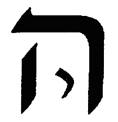

Pardes Rimmonim, English translation with the Hebrew.
We named it "Whether the Ein Sof is the Keter" because in it is explained whether the Ein Sof is Keter, as many have thought, and whether Keter is counted among the sefirot or not, as R. Shem Tov ibn Shem Tov supposed. Its chapters are eight.
3:1:1 The Third Gate: To Know Whether the Ein Sof is the Keter:
השער השלישי לדעת אם אין סוף הוא הכתר:
3:1:2 What is intended in this Gate is to discuss the matter of the perplexity that has fallen among the Kabbalists, [in coming] to know whether the Ein Sof is the Keter itself or other than it. And this is its name, by which they call it: "Whether the Ein Sof is the Keter."
הנרצה בשער הזה הוא לשאת ולתת בענין המבוכה נפלה בין המקובלים לדעת אם א"ס הוא הכתר עצמו או זולתו. וזה שמו אשר יקראו לו אם הא"ס הוא הכתר:
3:1:3 Chapter One:
פרק ראשון:
3:1:4 Many of the Kabbalists among the people of our nation have been perplexed with a great perplexity, and have fallen into the pit of error, and thought that the supernal Keter is the Ein Sof, and that it is in the number of the ten. And [there are] some of them who said that, since we have ten grades, what need is there for a further emanation? — but rather that the matter of the Emanator with the emanated [beings] is [the] ten. And they [thought to] support themselves from the Mishnah of Sefer Yetzirah, which said "ten and not nine, ten and not eleven"; and they said that [its] saying "and not eleven" [means] to say that we should not add further upon ten — but [rather] that the ten are precisely [the count], [including] the Emanator, who is the Ein Sof, the supernal Keter. This is their way — and may their Master forgive them, for this is a matter of cutting [the shoots] and separation; and one who looks at what I explained concerning that Mishnah, in the First Gate, ch.6, will see that, on the contrary, from there [comes] a proof to the opposite.
רבים מהמתקבלים בבני עמנו נבוכו במבוכה רבה ונפלו בשוחת הטעות וחשבו כי הכתר עליון הוא הא"ס והוא במנין העשר. ויש מהם אמרו כי מאחר שיש לנו עשר מדרגות מה צורך אל אצילות יותר אלא שענין המאציל עם הנאצלים הם עשר. ודמו להסתייע ממשנת ספר יצירה שאמר עשר ולא תשע עשר ולא אחד עשר ואמרו שאמרו ולא אחד עשר לומר שלא נוסיף עוד על עשר אלא שעשר הם ממש עם המאציל שהוא הא"ס כתר עליון. זה דרכם. ושרי להו מרייהו כי זהו ענין קצוץ ופרוד והרואה במה שפירשתי במשנה ההיא בשער הראשון בפ' ששי יראה כי אדרבה משם ראיה להפך.
3:1:5 Now this view is rejected for several reasons. If you wish, [argue] from Scripture; if you wish, [argue] from reason. The [argument from] reason is: that since the Emanator is distinguished from His emanated [beings] in several matters — first, that the emanated [beings] fall under time, and He does not fall under time. And I do not wish to say "time" according to what appears from the plain sense of our words, but the intent is that there was already a time when they were not emanated, as [for instance] before the Emanation. And this is one of the things impossible in the Ein Sof — that there was [ever] an existence in which He did not exist; rather, He is necessarily existent, and He brought time into existence, and not that He is possessed of time, God forbid. And in this matter is understood [the saying] "first, yet there is no beginning to its beginning" — for although we say "first," and every expression "first" indicates that it has a beginning (for it is true that He is first to all that come after Him) — yet the expression "first" indicates the beginning of time. And therefore it said that He is first, and even so there is no beginning to His beginning; and the expression "first" is only to negate that no other preceded Him. And this is what is said in the Tikkunim, "I am first and I am last." And Rashbi, peace be upon him, explained that ANI (I) is AYIN (Nothing), which is the supernal Keter. And "I" (ani) is Malkhut, which is the end of the Emanation — "its end embedded in its beginning and its beginning in its end" — for AYIN is alef = supernal Keter, yod = Chokhmah, [final] nun = Binah, with the extension of the vav, which is [the] nun, [i.e.] yod upon vav; and the [final] nun itself is Malkhut, in truth. It is found [that] AYIN comprehends the whole Emanation. And this [is] "I am first" — the secret of the extension and spreading of the Emanation from above to below; and "I am last" is the existence of the returning light, reversing from below to above. And by this is understood the matter of "first and last": for Keter is truly called "first," because it is first to all that come "in the beginning," which is [the emanated and below]; but above it, in the Ein Sof, the expression "first" does not apply. And this is "and before One, what can you count?" — the meaning [being]: Keter is called "one," which is the beginning of the count, which is the number of the ten, in which the whole count is comprehended, and the count's foundation is above, as we explained in the preceding Gate. And it said that "before One" — which is that [which is] prior to it, namely the Ein Sof — "what can you count?", for there applies there neither number, nor speech, nor any necessity at all. And of Him it is said (Job 37:20), "shall it be counted to Him when I speak?" — for number does not apply there. And with this premise is understood the verse (Isaiah 43) in which all the literalists were perplexed: "You are My witnesses, says YHVH, and My servant whom I have chosen, that you may know and believe Me and understand that I am He: before Me no God was formed, and after Me there shall be none." And the explanation: "that I am He" — namely Keter, for it is Keter that is truly called "He" (Hu); and to indicate its concealment, the word "Hu" [is] a pronoun for the hidden [third person]. And therefore it said that it is also called "I" (Ani), to indicate that it is the beginning of the Emanation and the end of the Emanation, in the secret of "I am first and I am last," as explained. And it said "before Me no God was formed" — and the word "formed" (notzar) [is] according to its plain sense, whose meaning is "was not emanated"; for the expression "formation" (yetzirah) too serves [to denote] the Emanation, just as the expression "creation" (beri'ah) serves, namely "In the beginning [God] created." And it said: "before Me none was emanated" — for it [Keter] is the head [first] of those that come within the category of the emanated; and it is the end of the whole Emanation, and this is what is said "and after Me there shall be none." And this indicates the strength of the greatness of the Ein Sof, King of kings of kings, the Holy One, blessed be He, which indicates His endurance — that He does not fall under time, but, on the contrary, He brought time into existence, and the existence of His non-being cannot be depicted in any manner in the world. And this is one of His many superiorities over His emanated [beings]: that all of them fall under [contingent] existence, [in] that there was already a time when the Ein Sof was without them, as before the Emanation. And many have thought to say that Keter was prior to all — that is, that, although there was no Emanation, it was in existence, and it is a garment to the Emanator forever. And the holders of this view are masters of the shields [formidable scholars]; and the principal necessity that compelled them to this matter is their saying, of blessed memory, in Pirkei de-Rabbi Eliezer, "before the world was created, He and His name alone existed" — the meaning [being] that "He and His name" are the Ein Sof and Keter; and they necessitated from this that Keter is prior, and that it is unified with the Emanator and a garment to Him. But this matter is not fitting to be believed. Rather, that the whole Emanation was emanated at one time, and Keter too is among the emanated [beings], as is necessitated from several passages, some of which we shall copy in the Gates, with God's help — and in particular in the Gate of Self and Vessels, and in the Gate of the Order of the Emanation, and the Gate of Tzachtzachot, with God's help. It is found that the Emanator is exalted above His emanated [beings] — for His emanated [beings], their non-being preceded them; which is not so [with] the Emanator, King of kings of kings, the Holy One, blessed be He. And behold, [this is] a first distinction. Further, the Emanator is distinguished from the emanated [beings] in that their life depends on another — namely, on the Emanator who gives them life; and He is the source and the light and the effluence to all His emanated [beings] — they are found, all of them, to need Him; whereas the Ein Sof, blessed be He, needs nothing other than Himself, but is the source of life, and life is found from Him, until He is the life of [all] life. And therefore, in some places, Rashbi, peace be upon him, in the Tikkunim, called Him by the expression "a light that does not subsist in [another] light," etc. — since He does not depend on life and effluence from the side of another, but is the source of light to all the other luminaries. And this matter Rashbi, peace be upon him, explained in the Tikkunim (Tikkunei Zohar Chadash, folio 132b) and in the Zohar [on] Bereshit (22): "Rabbi Shimon opened further and said: 'See now that I, I am He, and there is no god with Me.' He said: Companions, hear ancient words that I wish to reveal... What is [the meaning of] what it said, 'See now that I, I am He, and there is no god with Me'? Rather, this is the Cause above all the upper ones, that [One] called the Cause of Causes, the Cause [from] among these causes, [such] that none of these causes does any deed until it takes permission from the one above it, as we established above regarding 'let us make man' — 'let us make,' surely, was said of two, [in] that this one said to the one above it... And the one above it does nothing until it takes counsel from its fellow. But the one called the Cause over all the causes, above which there is none and below which there is none equal to it — this is what is written, 'And to whom will you liken Me, that I should be equal? says the Holy One.' He said: 'See now that I, I am He, and there is no god with Me,' that takes counsel from Him, in the manner of the one that said, 'And God said, let us make man.'" Thus far [the Zohar's] words.
והנה הסברא הזאת דחויה מכמה טעמים אב"א קרא אב"א סברא. הסברא היא כי מאחר שהמאציל נבדל מנאצליו בכמה עניינים. ראשונה שהנאצלים הם נופלים תחת הזמן והוא אינו נופל תחת הזמן. ואין רצוני לומר זמן כפי הנראה מפשוטן של דברינו, אלא הכוונה שכבר היה זמן שלא היו נאצלות כמו קודם האצי'. וזה אחד מהדברים הנמנעים בא"ס שלא הי' מציאות שלא ימצא, אלא הוא מחויב המציאות והוא המציא הזמן ולא שהוא בעל זמן ח"ו. ובענין זה יובן אמרו ראשון ואין ראשית לראשיתו כי עם שנאמר ראשון וכל לשון ראשון מורה על שיש לו ראשית כי אמת שהוא ראשון לכל הבאים אחריו אבל לשון ראשון מורה על התחלת זמן. וע"כ אמר שהוא ראשון ועכ"ז אין ראשית לראשיתו, ולשון ראשון אינו אלא לשלול שלא קדם אליו זולתו. וז"ש בתקונים אני ראשון ואני אחרון. ופי' הרשב"י ע"ה כי אנ"י הוא אי"ן שהוא הכתר עליון. ואני הוא מלכות שהיא תכלית האצילות נעוץ סופו בתחלתו ותחלתו בסופו כי אי"ן הוא א' כתר עליון י' חכמה ן' בינה עם משך הוא"ו שהוא ן' י' על ו' ומציאות הן' בעצמה היא המלכות לפי האמת נמצא אי"ן כולל כל האצילות. וזה אני ראשון סוד משך והתפשטות אצילות ממעלה למטה. ואני אחרון הוא מציאות אור החוזר המתהפך ממטה למעלה. ובזה יובן ענין ראשון ואחרון כי הכתר יקרא באמת ראשון מפני שהוא ראשון לכל הבאים בראשית שהוא מהנאצלים ולמטה אבל למעלה ממנו בא"ס לא שייך לשון ראשון וזהו ולפני אחד מה אתה סופר. פי' הכתר נקרא אחד שהוא תחלת החשבון שהוא מספר העשרה שבו כלול כל החשבון והחשבון יסודו למעלה כמו שפירשנו בשער הקודם. ואמר כי לפני אחד שהוא הקודם לו דהיינו הא"ס מה אתה סופר דלא שייך תמן לא מנין ולא דבור ולא חיוב כלל. ועליו נאמר (איוב לז כ) היסופר לו כי אדבר ולא שייך תמן מנין. ועם ההקדמה הזאת יובן הפסוק (בישעיה מ"ג) אשר נבוכו בו כל הפשטנים אתם עדי נאם ה' ועבדי אשר בחרתי למען תדעו ותאמינו לי ותבינו כי אני הוא לפני לא נוצר אל ואחרי לא יהיה. ופי' כי אני הוא היינו הכתר כי הוא הכתר הנקרא הו"א באמת. ולהורות על העלמו מלת הוא כנוי אל הנסתר. ולכן אמר שהוא נקרא אני ג"כ להורות שהוא תחלת האצילות וסוף האצי' בסוד אני ראשון ואני אחרון כמו שפי'. ואמר כי לפני לא נוצר אל ומלת נוצר כמשמעו שפי' לא נאצל כי לשון יצירה ג"כ משמש אל האצילות כמו שמשמש לשון בריאה דהיינו בראשית ברא. ואמר כי לפני לא נאצל זולתי, כי הוא ראש הבא בגדר הנאצל. והוא סוף לכל האצילות, וז"ש ואחרי לא יהיה. וזה מורה על תוקף גדולות הא"ס ממ"ה הב"ה שמורה על קיומו שאינו נופל תחת הזמן אלא אדרבה הוא המציא הזמן ולא יצוייר מציאות העדרו בשום אופן בעולם. וזו אחת ממעלותיו הרבות על נאצליו שכלם נופלים תחת המציאות שכבר היה זמן שהיה הא"ס זולתם כמו קודם האצילות. ויש רבים חשבו לומר שהכתר היה קודם לכל ר"ל כי עם היות שלא היה אצילות היה הוא במציאות והוא לבוש אל המאציל לעולם. ובעלי הסברא זאת הם בעלי תריסין ועיקר ההכרח שהכריחם לדבר זה הוא אמרם ז"ל בפדר"א קודם שנברא העולם היה הוא ושמו לבד פי' כי הוא ושמו היינו הא"ס וכתר. והכריחו מזה שכתר קודם ושהוא מתאחד במאציל ולבוש אליו. והענין הזה אין ראוי להאמינו. אלא שכל האצילות נאצל בעת אחת וגם הכתר מכלל הנאצלים כאשר הוא מוכרח מתוך כמה מאמרים וקצתם נעתיק בשערים בע"ה. ובפרט בשער עצמות וכלים ובשער סדר האצי' ושער הצחצחות בס"ד. נמצא שנתעלה המאציל על נאצליו. כי נאצליו קדם אליהם העדרם. משא"כ המאציל ממ"ה הקב"ה. והרי הבדל ראשון. עוד נבדל המאציל מן הנאצלים כי חיותם תלוי בזולתם היינו במאציל המחייה אותם והוא מקור והאור והשפע לכל נאצליו נמצאו כלם צריכין אליו. והא"ס ב"ה אין צריך אל זולתו אלא הוא מקור החיים והחיים נמצאים ממנו עד שהוא חיות החיים. ולכן בקצת מקומות כנהו הרשב"י ע"ה בתקונים בלשון נהורא דלא קיימא בנהורא וכו' אחר שאינו תלוי בחיות ושפע מצד זולתו אלא הוא מקור האור אל כל שאר המאורות. ודבר זה ביאר הרשב"י ע"ה בתקונים (תקוני ז"ח דף קל"ב ע"ב) ובזהר בראשית (דף כ"ב) פתח עוד ר"ש ואמר ראו עתה כי אני אני הוא ואין אלקים עמדי. אמר חבריא שמעו מלין עתיקין דאנא בעינא לגלאה כו' מאי ניהו דאמר ראו עתה כי אני אני הוא ואין אלקים עמדי. אלא דא איהו עילת על כל עלאין ההוא דאתקרי עלות העלות עלת מאלין עלות דלא יעביד חד מאלין עלות שום עובדא עד דנטיל רשותא מההוא דעליה כמה דאוקימנא לעיל בנעשה אדם נעשה ודאי על תרין אתמר דאמר דא לההוא דלעילא מיניה כו' וההוא דלעילא מיניה לאו עביד מדעם עד דנטיל עצה מחבריה. אבל ההוא דאתקרי עלת על כל העלות דלית לעילא מיניה ולית לתתא שוה ליה הה"ד ואל מי תדמיוני ואשוה יאמר קדוש. אמר ראו עתה כי אני אני הוא ואין אלקים עמדי דנטיל עצה מיניה כגוונא דההוא דאמר ויאמר אלקים נעשה אדם עכ"ל.
3:1:6 Now [Rashbi], peace be upon him, intended, in this holy passage, to exalt this superiority — that the Ein Sof is exalted above His emanated [beings], [in] that they need to take counsel, the lower from the upper, for it [the lower] needs effluence from its cause that emanates upon it; and therefore it says "let us make man" — as if to say, "you emanate, and I will act, and man is found made by the two of us"; and the upper one still needs to be emanated [upon] from its cause, for it too does not have the ability [on its own]. But the Ein Sof, blessed be He, does not need to say to another "let us make," but [says] "I, I am He, and there is no god with Me" — that is, "in assistance with Me" — neither a lower one, for it has none below it equal to it, nor an upper one, for there is no upper one other than it, for it is above all the existents. And it said "the Cause over all the upper ones, the Cause [from] among these causes" — [Rashbi] intended to explain to us that the reason it is called the Cause of Causes is for two reasons. The first: from the expression "ascent" (aliyah), and the intent is that it is above all the upper ones — and the intent is not an ascent of place, God forbid, for nothing enters into [the category of] place in the Emanation, all the more so in the Emanator, but the meaning [is] the existence of an ascent of degree, and spirituality, and ability. And the second meaning is from the expression "cause" (illah) and "reason" (sibbah) — that it is a cause and a reason to all the causes that are in existence.
הנה כיון במאמר הזה הקדוש ע"ה להפליג במעלה הזאת שמתעלה הא"ס על נאצליו שהם צריכין ליטול עצה התחתון מן העליון כי הוא צריך שפע מעילתו המשפיע עליו ולכן הוא אומר נעשה אדם כלומר תשפיע אתה ואני אפעול ונמצא אדם עשוי ע"י שנינו והעליון עדיין צריך להיות נשפע מעילתו כי אין בידו ג"כ היכולת. אבל א"ס ב"ה אינו צריך לאמר לזולתו נעשה אלא אני אני הוא ואין אלקים עמדי ר"ל בסיוע עמי לא תחתון שאין לו למטה שוה אליו ולא עליון שאין עליון זולתו כי הוא למעלה מכל הנמצאים. ואמר עילת על כל עלאין, עלת מאלין עלות. כיוון לבאר לנו שהטעם שהוא נקרא עלת העלות הוא משני פנים. הא' פי' מלשון עלייה והכוונה שהוא למעלה מכל העליונים. ואין הכוונה בעליית מקום ח"ו שאין שום דבר נכנס במקום באצילות כ"ש במאציל, אלא פי' מציאות עליית מעלה והרוחניות והיכולת. והפי' השני הוא מלשון עילה וסיבה שהוא סבה ועילה לכל העלות שבמציאות.
3:1:7 Now a second distinction has been explained, by which the Ein Sof, the Emanator, blessed be He, is distinguished from the emanated [beings]. Further, a third distinction, and it is: that all the emanated [beings] have a name among the holy names, which delimits them, by which that Sefirah and that emanated [being] is called — like Ehyeh in Keter, and Yah in Chokhmah, and so for all the rest of the Sefirot, as we explained in the First Gate explicitly. And likewise the four-letter name comprehends the whole Emanation, as is explained in the Zohar, and we shall explain in the Gate of the Four-Letter Name. This is not so [with] the Ein Sof, the Emanator, blessed be He, who has no name and [vowel-]point by which we can designate Him, nor attribute that would delimit Him; and we have not found for Him a name to designate Him except "the Necessarily Existent." And the explanation: that He is necessary in His existence, because the world is impossible, ever, without a conductor who gives effluence and life to all the existents; and for this reason His existence is necessary. And because there is no name that would delimit Him, therefore we designate Him "the Necessarily Existent," and this name the philosophers attributed to Him. Further, they attributed to Him the name Ein Sof (Without End), and the reason [is] because He has no end and terminus. For the thing delimited by a name has an end; and the divinity, because it has no end, has no name that would delimit it, and therefore we designate it by [the name] Ein Sof.
והנה נתבאר הבדל שני שנבדל הא"ס המאציל ב"ה מן הנאצלים. עוד הבדל שלישי והוא כי לכל הנאצלים יש להם שם משמות הקדש שהוא מגבילם אשר בו יקרא הספירה והנאצל ההוא כענין אהי"ה בכתר וי"ה בחכמה וכן לכל שאר הספירות כמו שבארנו בשער הראשון בפי'. וכן שם בן ד' כולל כל האצי' כלו כמבואר בזהר ונבאר בשער שם בן ד'. מה שאין כן בא"ס המאציל ב"ה שאין שם ונקודה שנוכל לכנותו בה ולא מדה שתגבלהו ולא מצאנו לו שם לכנותו אלא מחויב המציאות. ופי' כי הוא מחויב במציאותו מפני שא"א לעולם בלא מנהיג הנותן שפע ומחיה לכל הנמצאים ומטעם זה מחוייב מציאותו. ומפני שאין שם שיגבילהו לכן נתארהו מחויב המציאות, ושם זה יחסו אליו החוקרים. עוד ייחסו אליו שם א"ס והטעם מפני שאין לו סוף ותכלית. כי הדבר הנגבל בשם יש לו סוף, והאלקות מפני שאין לו סוף אין לו שם שיגבלהו ולכן אנו מתארים אותו בא"ס.
3:1:8 And further [there is] another explanation: because the inquiry into Him has no end — for it is not in the manner of the other inquiries, which have an end and a settling upon a single conclusion; but the inquiry into the divinity is without end, and therefore there is none who knows in Him any essence at all, except by means of the Sefirot, which reveal somewhat of His greatness — [and] only from His Sefirot and upward; [but] from there [upward] there is no apprehension, on account of the depth of what is apprehended; and therefore they designated Him Ein Sof. Further, they attributed to Him "Cause of Causes," and the intent is that the causes — from which other [things] are caused — are [themselves] caused [by] Him; and therefore He is called "the Cause of [the] causes," since He is a first cause to all the causes in the world: for although they are causes to other caused [things], even so they are all caused [by] Him. And there are [those] who said that the supernal Keter too is called "the Cause of Causes," since it is a cause to all the other causes, which are caused [by] it; which is not so from it [Keter] and below — [in] that Chokhmah is not a cause to all the caused causes, for Keter is the [one] that causes and is not caused [by] Chokhmah, but on the contrary Chokhmah is caused [by] it. And likewise, for this reason, they said that Keter is called "the Cause of Causes," [in] that it is the cause of the causes that are effects of it. However, the Ein Sof is called "the Cause of all causes" and "the Cause over the causes," with the addition of "all," to indicate, concerning the Ein Sof, that it is the cause of all causes — even Keter; which is not so [with] Keter, of which the expression "all causes" does not [rightly] apply (and likewise it lacks the "all"), since there is already a cause and reason of which it is the caused [one] — [in] that Keter is caused [by] the Ein Sof, and the Ein Sof is its cause; and likewise [the expression with "all"] would not be attributed thus to Keter. And these three names — namely, Ein Sof, and "the Cause of all causes," and "the Cause over all causes" — Rashbi attributed to the Emanator, blessed be He, in his books many times; and he likewise attributed to Him other names, such as "the Concealed of the Concealed," and likewise "the Ancient of Ancients," and many like these similar to them; and when the inquirer examines them closely, he will find that they all indicate the concealment, as we explained — that He has no name, nor havayah, nor title that would delimit Him. And behold, [this is] a third distinction, by which the Emanator is distinguished from the emanated [beings] — apart from several other distinctions, such as the removal of measure, and limit, and the predicates, and the changes, for all is in His Sefirot; and we shall not prolong [discussion] of them. And let us say that, since the Emanator is exalted and distinguished from His emanated [beings] [to] the utmost of distinction, and is distanced [to] the utmost of distance, then reason gives that it is not fitting for the Emanator to enter into the number of the emanated [beings], God forbid, as those thought who said that He is the Keter. And now let us come to prove [it] from the proofs.
ועוד פי' אחר מפני שהחקירה בו אין לו סוף. שאינה כדרך שאר החקירות שיש לה סוף והסכמה אל מסקנא אחת. אמנם החקירה באלקות היא בא"ס ולכן אין מי שידע בו מהות כלל אם לא ע"י ספירות המגלות קצת מגדולתו אמנם מספירותיו ולמעלה אין השגה מצד עומק המושג ולכן תארוהו בא"ס. עוד ייחסו אליו עלת העלות, והכוונה כי העלות אשר מהם עלולים אחרים הם עלולות ממנו ולכן נקרא סבת הסבות לפי שהוא סבה ראשונה לכל סבות שבעולם ואע"פ שהן סבות למסובבים אחרים עכ"ז כלם מסובבים ממנו. ויש שאמרו כי כתר עליון ג"כ נקרא סבת הסבות לפי שהוא סבה לכל שאר הסבות שהן מסובבות ממנו. משא"כ ממנו ולמטה שאין החכמה סבה לכל הסבות המסובבות שהרי הכתר הוא הסובב ואינו מסובב מהחכמה אלא אדרבא החכמה מסובבת ממנו. וכן מן הטעם הזה אמרו שנקרא הכתר עלת העלות שהוא עלת העלות העלולות ממנו. אמנם אין סוף נקרא סבת כל הסבות ועלת על העלות בתוספת כל להראות על הא"ס שהוא סבת כל הסבות ואפי' הכתר. מה שאין כן הכתר שלא יצדק בו לשון כל הסבות וכן כל העלות שכבר יש עילה וסבה שהוא מסובב ממנו שהכתר מסובב מהא"ס וא"ס סבתו. וכן לכל העלות, שלא יתייחס כן בכתר. ושלשה שמות הללו היינו א"ס וסבת כל הסבות ועלת כל העלות יחס הרשב"י אל המאציל ב"ה בספריו פעמים רבות וג"כ יחס אליו שמות אחרים כמו טמירא דטמירין וכן עתיקא דעתיקין וכאלה רבות כיוצא בהם וכאשר ידקדק המעיין בהם ימצא כלם מורים על ההעלם כמו שבארנו שאין לו שם ולא הויה ולא כנוי שיגבילהו. והרי הבדל שלישי שנבדל המאציל מן הנאצלים. בזולת כמה הבדלים אחרים כמו הרחקת השיעור והמדה והתארים והשנויים כי הכל בספירותיו ולא נאריך בהן. ונאמר כי אחר שיתעלה ונבדל המאציל מנאצליו תכלית ההבדל ונתרחק תכלית הרוחק אם כן הסברא נותנת שאין ראוי שיכנס המאציל במנין הנאצלים ח"ו כמו שחשבו האומרים שהוא הכתר. ועתה נבא להוכיח מן הראיות:
3:2:1 After we have, in the preceding chapter, established from reason that Keter is not the Ein Sof, now we shall come, in this chapter, to nullify this view from the words of Rashbi, peace be upon him, who enlightens the eyes of Israel in this wisdom; and we have from his words several proofs. First, he said in the book of the Tikkunim (in the Introduction, folio 6), and these are his words: "But the name YHVH is a chariot to its Master, to the supernal Keter. And therefore, 'there is none holy like YHVH' — the Cause over all, hidden and concealed in Keter; and from it His light spread upon YHVH, which is yod = Chokhmah, heh = Binah, vav comprising six Sefirot, heh = Malkhut" — thus far [his words], for our matter. And this is its explanation: YHVH, which is a hint at nine Sefirot, as he expounds and goes on, is a chariot to its Master, [namely] Keter; and the reason he said "its Master" is because it [Keter] is a father to the whole Emanation, and the whole Emanation is a throne to it. And it said "there is none holy like [koh]" — [this] will be understood with what Rashbi, peace be upon him, explained in another place, where he said that "there is none holy like koh" [refers] to Keter. And he said that this is the kaf of "koh," which is the kaf of Keter; and the reason for the kaf is that it is two yods, in the secret of "ten, ten the spoon" (asarah asarah ha-kaf); and this is what he said, "and therefore there is none holy [like koh]" — the meaning [being]: because YHVH is a chariot to Keter — [in] that the four-letter name [has a] yod at the head [beginning], and Adonai [has a] yod at the end — they are two yods, in the secret of direct light and returning light, which is the kaf of Keter — as this matter will be explained at length in the Gate of the Reversal of the Light, with God's help. And because these two lights are a chariot to Keter, which is the cause of the lights [coming] from the side of the Cause of Causes, the Ein Sof, blessed be He, concealed within it — and from it the light spread by means of Keter, in order that there be direct light and returning light — therefore it is called the kaf of Keter, which is two yods. And let the inquirer not hope from us the explanation of this matter, for its principal place is in the aforementioned Gate. Thus far the explanation of the passage, in brief.
אחר שבפרק הקודם הכרחנו מן הסברא שאין הכתר הא"ס, עתה נבוא בפ' זה לבטל סברא זו בדברי הרשב"י ע"ה מאיר עיני ישראל בחכמה הזאת ולנו מדבריו כמה ראיות. ראשונה אמר בס' התיקונים (בהקדמה ד"ו) וז"ל אבל שם ידו"ד איהו מרכבה למריה לכתר עלאה. ובגין דא אין קדוש כידו"ד עלת על כלא טמיר וגניז בכתר ומניה אתפשט נהוריה על ידו"ד דאיהו י' חכמה ה' בינה ו' כליל שית ספירן ה' מלכות עכ"ל לעניננו. וזה פירושו ידו"ד שהוא רמז לט' ספירות כדמפרש ואזיל הוא מרכבה למריה כתר, וטעם אמרו מריה מפני שהוא אב לאצילות כלו וכל האצילות כסא אליו. ואמר אין קדוש כה', יובן עם מה שבאר הרשב"י ע"ה במקום אחר שאמר שאין קדוש כה' הכוונה על הכתר. ואמר כי זה הוא הכ"ף דכה' שהוא כ"ף כתר וטעם הכ"ף כי הוא שני יודין בסוד עשרה עשרה הכ"ף וזהו שאמר ובג"ד אי"ן קדוש, פי' מפני שידו"ד היא מרכבה אל הכתר שהשם בן ד' יו"ד בראש ואדני יו"ד בסוף הם שני יודי"ן בסוד אור ישר ואור חוזר שהיא כ"ף כתר. כאשר יתבאר הענין הזה בארוכה בשער התהפכות האור בס"ד. ומפני ששתי האורות האלה הם מרכבה לכתר שהוא סבת האורות מצד עלת העלות אין סוף ב"ה הגנוז בו וממנו התפשט האור ע"י הכתר כדי שיהיה האור ישר והאור חוזר לכך נקרא כ"ף כתר שהוא שני יודי"ן. ואל יקוה ממנו המעיין ביאור ענין זה כי עקרו בשער הנזכר. ע"כ פי' המאמר בקיצור.
3:2:2 Now he said explicitly, "the Cause over all, hidden and concealed in Keter" — indicating that the Ein Sof is not the Keter. Further, he wrote in the Tikkunim (Tikkun 70, folio 124), and these are his words: "It is called YHVH from the side of the supernal Keter, which is closed up like a closed fist (kometz) that is closed — [such] that none knows what soul there is within. And the one that is within is closed up in thought; the Cause of Causes we call it." Thus far [his words].
והנה אמר בפי' עלת על כלא טמיר וגניז בבתר, מורה על שאין הא"ס הוא הכתר. עוד כתב בתיקונים (תקונא ע' דקכ"ד) וז"ל אתקריאת יהוה מסטרא דכתרא עילאה דאיהו סתים כקומץ דאיהו סתים דלא ידע בר נשמה דאית לגו. ומאן דאיהו לגו איהו סתום במחשבה עלת העלות קרינן ליה עכ"ל.
3:2:3 And the explanation: that he said at the beginning of his words, above, that in Malkhut is the four-letter name without [vowel-]point; and according to her nourishment, so is her vocalization. And now he said "from the side of Keter" — the meaning [being]: when she [Malkhut] is nourished from it [Keter], she is called by the name YHVH, which is [the four-letter name] with the vocalization of kametz (kometz); and the reason [is] "like a kometz that is closed" — the meaning [being]: like [the One that] is closed up in thought, the meaning [being] that even thought is forbidden in [respect of] Him; and He is called by us "the Cause of Causes" — but not that this name delimits Him, for there is no name that would delimit Him, as we explained in the preceding chapter. And the main part of this passage, with all that follows it, is explained at length in the Gate of the Four-Letter Name.
ופי' שאמר בתחלת דבריו למעלה שבמלכות הוא השם בן ד' בלא נקודה ולפי יניקתה כך נקודתה ועתה אמר דמסטרא דכתר פי' כאשר היא יונקת ממנו תקרא על שם יהוה שהיא הויה בנקודת קמץ והטעם כקומץ דאיהו סתים פי' כמו הוא סתום במחשבה פי' כי אפי' המחשבה אסורה בו, ונקרא אצלינו עלת העלות אבל לא שיהיה שם זה מגבילו כי אין שם שיגבילהו כדפי' בפרק הקודם. ועיקר המאמר הזה עם כל הנמשך אחריו נתבאר בארוכה בשער שם בן ד'.
3:2:4 Behold, he explained to us explicitly that the Cause of Causes is hidden and concealed in Keter, and that the Ein Sof is not the Keter itself.
הנה באר לנו בפי' כי עלת העלות גנוז ונעלם בכתר ושאין הא"ס הכתר עצמו.
3:2:5 And further, explicitly, in the Tikkunim in another place (Tikkun 70, folio 130), these are his words: "The supernal Keter, although it is primordial light, clear light, refined light, is dark before the Cause of Causes." And the main part of the passage will be explained in the Gate of Tzachtzachot, blessed be God.
ועוד בפי' בתיקונים במקום אחר (תקונא ע' דף ק"ל) ז"ל כתר עלאה אע"ג דאיהו אור קדמון אור צח אור מצוחצח, אוכמא איהו קדם עלת העלות. ועיקר המאמר יתבאר בשער הצחצחות ב"ה.
3:2:6 Behold, he indicated explicitly that Keter is not the Ein Sof, in his saying that Keter is dark — that is, that its light does not shine at all [by comparison], that it has no power before the Cause of Causes, which is its Emanator. Further, in the Tikkunim (Tikkun 18, folio 112), these are his words: "A unique Lord, ruling over them all, hidden and concealed in Keter." Thus far [his words].
הנה הורה בפירוש שאין הכתר הא"ס. באמרו שהכתר הוא חשוך. ר"ל שאין אורו מבהיק לכלום. שאין לו כח לפני עלת העלות שהוא מאצילו. עוד בתיקונים (בתיקון י"ח דף קי"ב.) וז"ל אדון יחיד שליט על כלהו מופלא ומכוסה בכתר עכ"ל.
3:2:7 And the explanation: that above this passage he spoke of the matter of the spiritual life-forces and chariot in the Sefirot, and afterward he said that the Ein Sof — who is called "a unique Lord," as is explained in Sefer Yetzirah — is hidden and concealed in Keter. And the intent is that His divinity is revealed only by means of the sheath of His light and His garment, which is Keter, and by means of it He rides in the rest of the Sefirot.
ופי' כי למעלה מן המאמר הזה אמר ענין החיות והמרכבה הרוחניות בספי' ואח"כ אמר שהא"ס שנקרא אדון יחיד כמבואר בס"י הוא מופלא ומכוסה בכתר. והכוונה שאין אלהותו מתגלה אלא על ידי תיק אורו ולבושו שהוא הכתר ועל ידה רוכב בשאר הספירות.
3:2:8 Behold, he indicated explicitly that Keter is not the Ein Sof. Further, in the Ra'aya Mehemna (Pinchas, folio 243), these are his words: "Because the Cause of Causes is hidden and concealed in this Keter and spread out in the name YHVH. On Sabbaths and festivals there is no dominion to Samael and the Serpent, nor to all his appointed [forces]; and there is no dominion to Gehinnom — the evil female of Samael and the Serpent — nor to his hosts: all of them are hidden away before the hosts of the King, in the manner that the nations of the world will be hidden away when the Messiah is revealed; this is what is written, 'and they shall come into the caves of the rocks and into the clefts of the crags.'" And its explanation is clear; and from it, it appears with clarity that one cannot say that Keter is the Ein Sof — [the Ra'aya Mehemna] indicates this in saying "the Cause of Causes is hidden and concealed in this Keter." It appears from his words that Keter is a palace for the Cause of Causes.
הנה הורה בפירוש שאין הכתר האין סוף. עוד בר"מ (פינחס דף רמ"ג) וז"ל בגין דעלת העלות מופלא ומכוסה בהאי כתר ואתפשט בשם יהו"ה. בשבתות וימים טובים לית שלטנותא דסמא"ל ונחש ולכל ממנן דיליה ולית שלטנותא לגיהנם נוקבא בישא דסמאל ונחש ולא למשריין דיליה, כלהון מיטמרן קדם משריין דמלכא כגוונא דאתטמרון אומין דעלמא כד אתגליא משיח הה"ד ובאו במערות צורים ובנקיקי הסלעים. ופירושו מבואר וממנו נראה בביאור שאין לומר שהכתר הוא הא"ס מורה על זה באמרו עלת העלות מופלא ומכוסה בהאי כתר. נראה מדבריו שכתר היכל לעלת העלות.
3:2:9 Now we have several clear proofs and faithful witnesses that Keter is not the Ein Sof, apart from several other proofs besides — and we have not copied them, because we need to copy them in the coming Gates, such as the passage of Elijah, "You are One," etc., which we shall copy in the Gate of Self and Vessels, ch.5; and some of them we have not seen [fit] to copy at all, on account of the length. Even so, by these proofs the view of those who say that Keter is the Ein Sof is nullified.
והנה לנו כמה ראיות ברורות ועדים נאמנים שאין הכתר הוא הא"ס, בזולת עוד כמה ראיות אחרות, ולא העתקנום מפני שאנו צריכים להעתיקם בשערים הבאים כמו מאמר אליהו דאנת הוא חד כו' שנעתיקה בשער עצמות וכלים פ"ה וקצתם לא ראינו להעתיקם כלל מפני האריכות. עכ"ז בראיות האלה בטלה דעת האומרים שהכתר הוא האין סוף:
3:3:1 After we have, in the preceding chapter, striven to establish, of necessity, that the Ein Sof is not the Keter, but [that] each of them is a matter in its own right — that is, this [one is] Emanator and this [one] emanated — we have seen [fit], in this chapter, to nullify another view, close to the view of the earlier Kabbalists, namely the view of Rabbi Shem Tov in Sefer ha-Emunot, Gate 4, ch.1, who first counted the Sefirot and said that Keter is the first Sefirah, [and] afterward said that Keter is not in the category of the Sefirot. And this is the form of his language, in utmost brevity: "All the Kabbalists agreed to count these ten Sefirot — the first, supernal Keter; the second, Chokhmah, etc.; however, the most wondrous and the deepest in the wisdom agreed that, in truth, the supernal Keter is not to be counted in the category of the ten, for it is like the Ein Sof; and just as the Cause of all causes is not to be counted at all, so it is not fitting to count the supernal Keter, for there is no beginning and no terminus and end in it, and it is the All. And Rashbi warned about this in several places, and to this he directed [his words] in Sefer Yetzirah, 'ten and not eleven.' And you already know that it is agreed among the sages of the Mishnah that Elijah the prophet is revealed to all the worthy; and there is a tradition, to some of the later [authorities] of blessed memory, that he was revealed to the great Rabbi Abraham, the pious Av Beit Din, of blessed memory, and from him the great Rabbi Ra'avad, his son-in-law, received [it], and the pious Rabbi Isaac, whose tradition is choice flour, [penetrating] very deep into the wisdom of Kabbalah. And he too explained 'ten and not eleven' — that Keter is not to be brought into the count; and the one that completes the count is the supernal Da'at, which the verse hinted at (Proverbs 3:20), 'by His knowledge the depths were cleaved.' And of it [Sefer] ha-Bahir said that it is the holy palace. And the principal [reference] of the unique name written in the books of the Prophets, they directed [it] in the letters of the Name, by means of Tiferet, to this [Da'at], for it is a palace to the supernal root." Thus far [his words].
אחר שבפרק הקודם השתדלנו להעמיד בהכרח שאין הא"ס הוא הכתר אלא כל אחד מהם ענין בפ"ע ר"ל זה מאציל וזה נאצל. ראינו בפרק זה לבטל סברא אחרת קרובה לדעת המקובלים הקודמים והיא סברת הר' שם טוב בספר האמונות שער ד' פ"א שתחלה מנה הספירות ואמר שכתר היא ספירה ראשונה, אח"כ אמר שאין הכתר בכלל הספירות. וזה טופס לשונו בקצור נמרץ. כל המקובלים הסכימו למנות עשר ספירות אלו א' כתר עליון ב' חכמה וכו', אולם המופלאים והעמוקים שבחכמה הסכימו שאין למנות כ"ע ע"ד האמת בכלל העשר כי הוא כא"ס, וכמו שסבת כל הסבות אין למנותו כלל כן אין ראוי למנות לכ"ע כי אין שום התחלה ושום קץ וסוף בו והוא הכל. ורשב"י הזהיר על זה בכמה מקומות ועל זה כוון בס' יצירה עשר ולא אחד עשר. וכבר ידעת היות מוסכם אצל חכמי המשנה שאליהו הנביא מתגלה אל כל הראוים. ויש קבלה למקצתן מן האחרונים ז"ל שהיה מתגלה להרב הגדול ר' אברהם אב"ד החסיד ז"ל וממנו קבל הרב הגדול הראב"ד חתנו והרב החסיד רבי יצחק שקבלתו סלת נקייה לעמוק מאד בחכמת הקבלה. והוא ג"כ פירש י' ולא י"א שאין להכניס במנין הכתר. והמשלים המנין הוא הדעת העליון שרמז הכתוב (משלי ג כ) בדעתו תהומות נבקעו. ועליו אמר בספר הבהיר שהוא היכל הקודש. ועיקר שם המיוחד הכתוב בספרי הנביאים כוונו באותיות השם באמצעות הת"ת לזה כי הוא היכל לשרש העליון עכ"ל.
3:3:2 And he prolonged much further according to this view. And in another place he wrote that, for this reason, Sefer Yetzirah called Chokhmah "the depth of beginning," for it is the beginning, etc. This is the view of Rabbi Shem Tov, who wished to say that Keter is not in the count of the Sefirot — though he admitted, regarding the matter, that the Ein Sof is not the Keter, as is proved from his language in which he said, "and just as the Cause of all causes is not to be counted at all, so it is not fitting to count the supernal Keter" — [thereby] indicating that the Cause of all causes is not the Keter, but [rather] Keter is emanated from it. And before we enter into the demolition of this view, it is fitting that we know who brought them into this error; and we say that they were driven to this view on account of three things. First, the passage "By ten utterances the world was created" (Avot 5:1), which we copied in the preceding Gate, in ch.3; and there we strove with the matter and established that from that passage there is no proof for his words at all. And the second: that they saw [that] in Sefer Yetzirah [the author] began to count from the mishnah of the depths from Chokhmah, in his saying "the depth of beginning and the depth of end," which are Chokhmah and Binah — so that it appears that it [Chokhmah] is first to the Emanation, and Keter is not in the count of the Sefirot; and likewise in his saying "one: the spirit of the living God," etc., "two: spirit from spirit" — they said that "one: the spirit of the living God" is Chokhmah, and "spirit from spirit" is Binah, etc. — [so that] it appears that the count of the ten Sefirot begins from Chokhmah. And the third: that they found a great tree on which to hang, namely the divine Rashbi, peace be upon him, in the Idra, [where] these are his words: "The place where the beginning is found is from the Holy Ancient One, which is illumined from the mazal," etc., as we shall copy, with God's help.
ועוד האריך הרבה ע"פ הסברא הזאת. ובמקום אחר כתב כי מטעם זה קרא בס"י לחכמה עומק ראשית כי הוא תחלה וכו'. זאת היא סברת רש"ט שרצה לומר שהכתר אינו במנין הספירות עם שהודה בענין שהא"ס אינו הכתר כדמוכח מתוך לשונו שאמר וכמו שסבת כל הסבות אין למנותו כלל כן אין ראוי למנות לכ"ע, הורה שסבת כל הסבות אינו הכתר, אמנם הכתר נאצל ממנו. וקודם שנכנס בהריסת סברא זו ראוי שנדע מי הביאם בטעות זה ונאמר כי הוזקקו לסברא זו מפני ג' דברים ראשונה מאמר בעשרה מאמרות נברא העולם (אבות פ"ה מ"א) שהעתקנהו בשער הקודם בפ"ג. ושם השתדלנו בענין והכרחנו שאין מאותו המאמר ראייה לדבריו כלל. והשני שראו בס"י התחיל למנות משנת העמקים מחכמה באומרו עומק ראשית ועומק אחרית שהן חכמה ובינה שנראה שהיא ראשונה לאצילות ואין הכתר בחשבון הספירות וכן באמרו אחת רוח אלקים חיים וכו' שנייה רוח מרוח אמרו כי אחת רוח אלקים חכמה ורוח מרוח בינה וכו' נראה שמחכמה מתחיל מנין הע"ס. והשלישית כי מצאו אילן גדול לתלות בו והוא האלהיי רשב"י ע"ה באדרא וז"ל אתר דשירותא אשתכח מעתיקא קדישא דאתנהיר ממזלא וכו' כמו שנעתיקהו בע"ה.
3:3:3 Now, since the beginning of the Emanation is from Chokhmah, which is illumined from Keter, it appears explicitly that Keter is not in the category of the count of the ten Sefirot; therefore they pressed themselves to seek the completion of the count of the ten, and sought Da'at. But in truth they did not seek what is right. For the matter of this view is rejected — if you wish, [argue] from Scripture; and if you wish, [argue] from reason. A proof from reason: because [Keter] cannot escape [being one] of two things — either it is emanated, or it is not emanated. If it is emanated, then, since it is an effect of the First Cause, why should it not enter into the count of the Sefirot? For who diminished the honor of the Emanation [so much] that Keter, because it is like the Ein Sof and is great and praiseworthy, should not enter into the count of the Sefirot? — for the Sefirot (namely Chokhmah and Binah) are also like the Ein Sof in their power and their excellence, and even so we did not restrain ourselves from counting them among the ten. And behold, since Keter is a cause to Chokhmah, and Chokhmah a cause to Binah, and the three of them are surely emanated — then as Chokhmah [stands] to Binah, so Keter [stands] to Chokhmah; and just as Chokhmah is counted in the count of the Sefirot together with Binah, so Keter should be counted together with Chokhmah. If so, what is the reason that we should elevate Keter above all the rest of the emanated [beings]? And further, that which he said — that it is like the Ein Sof — is no excellence at all, since it is impossible for it to be exactly equal to the Emanator, for, being an effect of Him, it necessarily descended from the degree of its cause; and after we have exalted the Cause of all causes as much as is possible in [what is] without end, it is not fitting to exalt Keter so much, for it is not at the degree of its Emanator, since it is emanated and an effect of a First Cause, as explained. And as Rashbi, peace be upon him, explained in saying "it is dark before the Cause of Causes" — he indicated that it is not at the degree of the Ein Sof, God forbid; and if so, why is it "like the Ein Sof"? For the definition of the Ein Sof is a predicate by which nothing is [truly] predicated at all, except [of] the Emanator. And since it [Keter] is in the category of the emanated [beings] and is not like the Ein Sof, then why should it not come into the count of the Sefirot? — for it is only of the count of the emanated [beings]; and why should we count some of them and leave out some? This is not fitting. And if you say that it is not emanated — this is impossible to believe, unless we say that it is the Cause of all causes and there is none besides it; for if not so, it is a duality, God forbid, [for us] to say that there is one thing besides the Cause of all causes that was not emanated from it. And if we say that it is emanated as well, but [that] it is not like the rest of the emanated [beings] because it preceded them by a long time — this is impossible, for there cannot be priority over Chokhmah except the priority of cause and effect; for it is impossible to separate and distinguish between every emanated [being] and emanated [being] except like the distinction of cause and effect; and so too the distinction between Chokhmah and Binah. And just as we bring into the count of the emanated [beings] Chokhmah together with Binah, so we also bring in Keter together with Chokhmah. And since, from reason, it is necessitated that Keter is in the count of the ten, it is likewise necessitated from the proof from the words of Rashbi, peace be upon him, in the Tikkunim (Tikkun 70, folio 118), [where] these are his words: "And these limbs are all in the Sefirot: the head [is] Keter; the brain, Chokhmah; Binah [is] the heart, and in it 'the heart understands'; the two arms, Chesed and Gevurah; the body, the central pillar; the two thighs, Netzach and Hod; Yesod [is] the member (amah); the Shekhinah [is] its sign (ot)." Thus far [his words].
והנה אחר כי תחלת האצילות הוא מחכמה המתנהרת מהכתר נראה בפי' שאין הכתר מכלל מנין ע"ס לכן דחקו עצמם לבקש תשלום מנין העשר ובקשו דעת. והאמת לא בקשו צדק. כי ענין הסברא הזאת היא דחויה אב"אי קרא ואב"אי סברא. ראייה מן הסברא מפני שלא ימלט מב' דברים בכתר אם הוא נאצל או אינו נאצל. אם הוא נאצל א"כ מאחר שהוא עלול מהסבה הראשונה למה לא יכנס במנין הספירות כי מי המעיט בכבוד האצילות עד שהכתר מפני שהוא כא"ס והוא גדול ומשובח לא יכנס במנין הספירות כי הספירות (הם חכמה ובינה) הם ג"כ כאין סוף בכחם ומעלתם ועכ"ז לא מנענו עצמנו מלמנותם בעשר. והרי אחר שהכתר עילה לחכמה וחכמה עילה לבינה ושלשתם ודאי נאצלים א"כ כערך חכמה אל הבינה כן ערך הכתר אל החכמה וכמו שהחכמה נמנית במנין הספי' עם הבינה כן הכתר ימנה עם החכמה א"כ מה הטעם שנעלה הכתר על כל שאר הנאצלים ועוד כי מה שאמר שהוא כא"ס אינו מעלה כלל לפי שהרי א"א שיהיה שוה אל המאציל ממש מאחר שהוא עלול ממנו בהכרח ירד ממעלת עילתו ואחר שנפליג בעלת כל העלות כל מה שאפשר במה שהוא א"ס אין ראוי להפליג כ"כ בכתר כי אינו במעלת מאצילו אחר שהוא נאצל ועלול מעילה ראשונה כדפי'. וכמו שפי' הרשב"י ע"ה באמרו אוכמא איהו קדם עלת העלות הורה שאין הוא במעלת הא"ס ח"ו וא"כ למה הוא כא"ס כי גדר הא"ס הוא תואר שלא יתואר בו כלל באמיתית כ"א במאציל. ומאחר שישנו בכלל הנאצלים ואינו כא"ס א"כ למה לא יבא במנין הספירות כי אינו רק ממנין הנאצלים ולמה נמנה קצתם ונניח קצתם זה בלתי ראוי. וא"ת שאינו נאצל, זה א"א להאמינו אם לא שנא' שהוא סבת הסבות ואין זולתו שאל"כ הוא שניות ח"ו שנאמר שיהיה דבר אחד זולת סבת הסבות ולא היה נאצל ממנו. ואם נאמר שהוא נאצל ג"כ אלא שאינו כדמיון שאר הנאצלים מפני שקדם להם זמן רב. זה א"א כי א"א קדימה על החכמה אלא קדימת עילה ועלול כי א"א להפרד ולהבדיל בין כל נאצל ונאצל אלא כהבדל עילה ועלול וכן ההבדל ג"כ בין החכמה ובין הבינה וכמו שנכניס במנין הנאצלים החכמה עם הבינה כן נכניס ג"כ הכתר עם החכמה. ואחר שמתוך הסברא הוא מוכרח שהכתר הוא במנין עשר ג"כ מוכרח מתוך הראיה מדברי הרשב"י ע"ה בתקונים (תקונא ע' דף קי"ח) וז"ל ואברין אלין כלהו בספירן. רישא כ"ע, מוחא חכמה, בינה לבא ובה לב מבין, תרין דרועין חסד וגבורה, גופא עמודא דאמצעיתא, תרין שוקין נצח והוד, יסוד אמה. שכינתא אות דיליה עכ"ל.
3:3:4 And although there is somewhat in it to rouse [discussion], even so it is not of [what is] relevant to us.
ועם היות שיש בו להתעורר קצת עכ"ז אינו מהמתיחס אלינו.
3:3:5 Now he counted ten Sefirot against the limbs, and counted the supernal Keter [as] the head, and did not count Da'at at all — thus the supernal Keter is in the category of the Sefirot. Further, in the Tikkunim (in the Introduction, folio 3): "And I heard the sound of their wings, in ten kinds of praise. In a simple song, which is yod — Keter; a doubled song, which is YH — Chokhmah and Binah; a tripled [song] in YHV — which is ChaGaT [Chesed-Gevurah-Tiferet]; a quadrupled [song] in YHVH — which is NHYM [Netzach-Hod-Yesod-Malkhut]." Thus far [his words].
והנה מנה י"ס נגד האברים ומנה כ"ע רישא ולא מנה דעת כלל, הרי שכ"ע בכלל ספירות. עוד בתקונים (בהקדמה דף ג') ואשמע את קול כנפיהם בעשר מיני תהלים. בשיר פשוט דאיהו י' כתר, שיר כפול דאיהו י"ה, חכמה ובינה משולש ביה"ו דאיהו חג"ת, מרובע בידוד דאיהו נהי"ם עכ"ל.
3:3:6 Behold, he counted ten Sefirot in ten letters, and did not count Da'at at all, but [rather] Keter. And there is no reason to say that this Keter that he counted is Da'at — for if so, he should have begun from Chokhmah, which is the beginning of the Emanation according to their view; and further, [because] all agree that this one's name is Keter and this one's name is Da'at, and they differ only [as to] which of them comes into the count of the ten.
הנה מנה עשר ספירות בעשר אותיות ולא מנה הדעת כלל אלא הכתר. ואין סברא לומר כי זה הכתר שמנה הוא הדעת, א"כ היה לו להתחיל מחכמה שהוא ראשית האצילות לפי דעתם ועוד דכולי עלמא סברי שזה כתר שמו וזה דעת שמו ולא פליגי אלא איזה מהם יבא במנין עשר.
3:3:7 And further, a proof from the Zohar, Parashat Bereshit (folio 31), [where] these are his words: "And therefore 'Bereshit' — bet [+] reshit — is Chokhmah, as Yonatan rendered 'Bereshit' [as] 'with wisdom' (be-chokhmeta), because it is second to the count. And it is called 'reshit' (beginning); [yet] this supernal Keter, [being] concealed, is first; and because it does not enter into the count, the second is [called] 'reshit' — therefore, bet [+] reshit." Thus far [his words].
ועוד ראייה מהזהר פ' בראשית (דף ל"א) וז"ל וע"ד בראשית ב' ראשית היא חכמה כמה דתרגם יונתן בראשית בחכמתא, בגין דאיהו תניינא לחשבנא. ואקרי ראשית, דהאי כתרא עלאה טמירא היא קדמאה. ועל דלא עייל בחושבנא, תניינא הוי ראשית, בג"ד ב' ראשית עכ"ל.
3:3:8 And the explanation: that he found a difficulty in the word "Bereshit," for the bet is large, and it hints at Chokhmah, as is known, and the word "reshit" too hints at Chokhmah — it is found, then, that Chokhmah is hinted at in this word twice, improperly; and this he intended in saying "Bereshit — bet [+] reshit — is Chokhmah," the meaning [being] that both hint at Chokhmah: the bet, as is well known that it is bet, and "reshit" in his saying "reshit," which is Chokhmah. And because, from this difficulty, I might have said that "Bereshit" in its entirety hints at Chokhmah — that is, that there is no hint at Chokhmah for the word "reshit" unless it comes with a bet, namely "Bereshit" — [therefore] he established that the word "reshit" alone is the hint at Chokhmah; and a proof of this [is] from the Targum of Yonatan, who rendered "be-chokhmeta" and did not say "chokhmeta" — as it appears that the bet always hints at Chokhmah, apart from the word "reshit," which is also a hint at Chokhmah, as Yonatan rendered "be-chokhmeta," the bet [being] a servile [prefix].
ופי' כי הוקשה לו במלת בראשית כי הבי"ת היא גדולה והיא רומזת לחכמה כנודע ומלת ראשית ג"כ הוא רומז בחכמה נמצא א"כ החכמה נרמזת בתיבה זו שני פעמים שלא כראוי וזה כוון באמרו בראשית ב' ראשית היא חכמה. פי' שניהם רומזים בחכמה הבי"ת כמפורסם שהוא בי"ת וראשית באמרו ראשית שהיא חכמה ומטעם כי מתוך קושיא זו הייתי אומר בראשית בכללה רומז בחכמה, ר"ל כי אין הרמז בחכמה למלת ראשית אם לא שיבא בבית דהיינו בראשית, לזה הכריח כי מלת ראשית לבד הרמז בחכמה וראייה לזה מת"י שפירש בחכמתא ולא אמר חכמתא כנראה כי הבית לעולם היא רומזת בחכמה מלבד מלת ראשית שהוא ג"כ רמז בחכמה כמו שפירש יונתן בחכמתא הבי"ת שימושית.
3:3:9 Now from the Targum of Yonatan it is necessitated that it is always a doubling, for "reshit" is "chokhmeta" and the bet too hints at Chokhmah. And he answered to the matter of the doubling: because the word "reshit" indicates "beginning," and it would appear that Chokhmah is the beginning of the Emanation and its first [point] — and this is not so, for Keter is the beginning of the Emanation; therefore [the word] came with the letter bet at its beginning, as if to say: although it is called "reshit," even so it is second, by the count of the Sefirot, and Keter is the first. And this is what is said, "because it is second to the count" — the meaning [being]: Chokhmah is second to the count of the Sefirot. "And it is called reshit" — the meaning [being]: and why is it called "reshit," which is, in truth, the place of error, [given] that Keter is the first and the prior? (And therefore he needed to say "bet," as he concludes at the end of his words.) To this he said, "this supernal Keter, [being] concealed, is first" — the meaning [being]: because he found a difficulty [in] that, since in truth it [Chokhmah] is second and not first, then why is it called "reshit," [when] it is not first, since Keter precedes it? And to this he said that Keter is concealed and hidden, and it is not fitting that it be called "reshit"; for the meaning of "reshit" is the beginning of revelation, and the beginning of revelation is in Chokhmah, not in Keter, as will be explained, with God's help. Therefore Chokhmah is called "reshit," and not Keter. And although it is not fitting for Keter to be called "reshit," even so it is first to the Emanation and enters into the count of the Emanation — and this is what is said, "it is first." "And because it does not enter into the count" [the meaning being: into the category of the revealed], as explained, "the second is [called] reshit" — the meaning [being]: it [Chokhmah] is the second, although it is called "reshit," for the reason we explained. "Therefore, bet [+] reshit" — the meaning [being]: and therefore the word "reshit" came doubled, to tell you [that] Chokhmah is called "reshit," and [that] although it is "reshit" it is second — and this is the bet at the head of the word. Thus far the explanation of the passage.
והנה מת"י מוכרח שלעולם הוא כפל כי ראשית היא חכמתא והבי"ת ג"כ רומז אל החכמה. והשיב אל הענין הכפל מפני שמלת ראשית מורה על תחלת, והיה נראה שהחכמה תחלת האצילות וראשיתו. וזה אינו כי הכתר תחלת האצילות, לכן באה באות בית בתחלתה כאומר אע"פ שנקרא ראשית עכ"ז היא שנית לי' למנין הספירות וכתר הוא הראשון. וז"ש בגין דאיהו תניינא לחושבנא פי' חכמה שנית למנין הספירות. ואיקרי ראשית, פי' ולמה נקרא ראשית והוא מקום הטעות לפי האמת מפני שהכתר הוא הראשון והקדום, (ולכן הוצרך לומר בי"ת כדמסיק בסוף דבריו). לז"א דהאי כתרא עלאה טמירא היא קדמאה. פי' מפני שהוקשה לו כי כיון שלפי האמת היא שנית ולא ראשונה א"כ למה נקרא ראשית שאינה ראשונה מאחר שהכתר קודם אליה. ולזה אמר שהכתר טמיר ונעלם ואין ראוי שיקרא ראשית, כי פירוש ראשית ר"ל תחלת הגלוי ותחלת הגלוי הוא בחכמה לא בכתר כמו שיתבאר בע"ה. לכן נקרא החכמה ראשית ולא הכתר. ועם היות שאין ראוי לכתר להיות נק' ראשית עכ"ז הוא ראשון לאצי' ונכנס בחשבון האצי' וז"ש היא קדמאה. ועל דלא עייל בחושבנא [ר"ל בכלל הגלוי] כדפי', תניינא הוו ראשית, פי' הוי הוא שנית עם שהיא נקרא ראשית מן הטעם שבארנו. בג"ד ב' ראשית, פי' ולפיכך באה מלת ראשית כפולה לומר לך חכמה נקרא ראשית ועם היותה ראשית היא שניה והיינו בית שבראש התיבה. ע"כ פי' המאמר.
3:3:10 Now he has indicated to us explicitly that Keter is in the count of the ten Sefirot, and that there is no doubt in it, even though Chokhmah is called "reshit." And we have yet very many good proofs, the like of these and these; and we shall not trouble ourselves with copying them here, since we are obliged to copy them in the coming Gates, with God's help.
והנה הורה לנו בפי' כי הכתר הוא במנין ע"ס, ושאין בו פקפוק עם שהחכמה נקרא ראשית ויש לנו עוד ראיות טובות הרבה מאד כהנה וכהנה ולא נטריח עצמינו בהעתקתם הנה להיות שאנו מוכרחים להעתיקן בשערים הבאים בע"ה.
3:3:11 Now we have established explicitly that Keter is of the count of the Sefirot. (See in [the commentary] Pelach ha-Rimmon.)
והנה הכרחנו בפי' שהכתר ממנין הספירות (ע' בפלח הרמון):
3:4:1 Since, in the preceding chapter, we established that Keter is in the count of the Sefirot, it remains for us to explain the matter of the passages that, on their face, oppose this view — namely, those from which the commentators drew a necessity for their view. First, from Sefer Yetzirah, which said in the mishnah of the depths, [where] these are its words: "Ten Sefirot of belimah; their measure is ten, which have no end: the depth of beginning and the depth of end, the depth of good and the depth of evil, the depth of above and the depth of below, the depth of east and the depth of west, the depth of north and the depth of south. And a unique Lord, God, faithful King, ruling over them all from His holy abode for ever and ever." Thus far [its words].
להיות שבפרק הקודם הכרחנו שהכתר במנין הספירות, נשאר לנו לבאר ענין המאמרים המנגדים לכאורה סברא זו והם אותם שהכריחו המפרשים לדעתם מהם. ראשונה מספר יצירה שאמר במשנת העמקים וז"ל ע"ס בלימה מדתן עשר שאין להם סוף. עומק ראשית ועומק אחרית, עומק טוב ועומק רע, עומק רום ועומק תחת, עומק מזרח ועומק מערב, עומק צפון ועומק דרום. ואדון יחיד אל מלך נאמן מושל בכולן ממעון קדשו ועד עדי עד עכ"ל.
3:4:2 And they said that, since the depth of beginning is Chokhmah and the depth of end is Binah, as they explained, then it is necessitated that the count of the Sefirot is specifically from Chokhmah and below, and that Keter is not in the count of the Sefirot, and [that] the "depth of above" mentioned in the mishnah is Da'at.
ואמרו כי מאחר שעומק ראשית היא החכמה ועומק אחרית היא הבינה כמו שביארו, א"כ הוא מוכרח כי מנין הספי' הם דוקא מהחכמה ולמטה ושאין הכתר במנין הספי' ועומק רום הנזכר במשנה הוא הדעת.
3:4:3 And further, they added to bring a proof from another mishnah like this one in Sefer Yetzirah, [where] these are its words: "Ten Sefirot of belimah. One: the spirit of the living God, blessed and praised be the name of the Life of the worlds — voice, and spirit, and speech; and this is the holy spirit. Two: spirit from spirit; He hewed and engraved in it twenty-two letters — three mothers, and seven doubles, and twelve simples — and a [single] spirit [is] in each one of them. Three: water from spirit; He engraved and hewed in them formlessness and void, mire and clay; He engraved them like a kind of garden-bed, and set them up like a kind of wall, and covered them like a kind of ceiling. Four: fire from water; He engraved and hewed in it the throne of glory, and the ophanim, and the seraphim, and the holy living-creatures, and the ministering angels; and from the three of them He founded His abode, as it is said (Psalms 104:4), 'who makes His angels [of] winds, His ministers a flaming fire.' Five: He sealed [the] height; He chose three letters from the simples and fixed them in His great name, YHV, and sealed with them six extremities; He turned upward and sealed it with YHV. Six: He sealed [the] depth-below; He turned downward and sealed it with YVH. Seven: He sealed [the] east; He turned before Him and sealed it with HYV. Eight: He sealed [the] west; He turned behind Him and sealed it with HVY. Nine: He sealed [the] south; He turned to His right and sealed it with VYH. Ten: He sealed [the] north; He turned to His left and sealed it with VHY. These [are] ten Sefirot of belimah: the spirit of the living God; and spirit; and water; and fire; and height-above, and below, east, west, north, south." Thus far [its words].
ועוד הוסיפו להביא ראיה ממשנה אחרת כזו שבס"י וז"ל ע"ס בלימה. אחת רוח אלקים חיים ברוך ומבורך שמו של חי העולמים קול ורוח ודבור וזהו רוח הקודש. שתים רוח מרוח חצב וחקק בו עשרים ושתים אותיות שלש אמות ושבע כפולות ושתים עשרה פשוטות ורוח לכל אחת מהן. שלש מים מרוח חקק וחצב בהן תהו ובהו רפש וטיט חקקן כמין ערוגה והציבן כמין חומה וסככן כמין מעזיבה. ארבע אש ממים חקק וחצב בה כסא הכבוד ואופנים ושרפים וחיות הקודש ומלאכי (השרש) [השרת], ומשלשתן יסד מעונו שנאמר (תהלים קד ד) עושה מלאכיו רוחות משרתיו אש לוהט. חמש חתם רום ג' אותיות מן הפשוטות קבען בשמו הגדול יה"ו וחתם בהם שש קצוות פנה למעלה וחתמו ביה"ו. שש חתם תחת ופנה למטה וחתמו ביו"ה. שבע חתם מזרח פנה לפניו וחתמו בהי"ו. שמנה חתם מערב ופנה לאחריו וחתמו בהו"י. תשע חתם דרום ופנה לימינו וחתמו בוי"ה. עשר חתם צפון ופנה לשמאלו וחתמו בוה"י. אלו עשר ספירות בלימה רוח אלהי' חיים, ורוח, ומים, ואש, ורום מעלה, ותחת, מזרח, מערב, צפון, דרום עכ"ל.
3:4:4 Behold, it appears explicitly that [the author] took the path of the other mishnah, and said: "one: the spirit of the living God," which is Chokhmah; and "two: spirit," which is Binah; "three: water from spirit," which is Chesed; "four: fire," which is Gevurah; and "height" is necessarily Da'at — thus necessarily the count of the Sefirot is only from Chokhmah. This is the view of Rabbi Shem Tov, and his [argument from] necessity. And now we are surely obliged to explain these mishnayot, so that all may be rectified, blessed be God. First our occupation will be with the mishnah of the depths, and from there the matter of the preceding mishnah will be explained. And on this mishnah Ramban, of blessed memory, wrote, "I do not understand this clause." Thus far [his words].
הנה בפי' נראה שדרך דרך המשנה האחרת ואמר א' רוח אלקים חיים שהוא חכמה, וב' רוח שהיא הבינה, ג' מים מרוח שהיא החסד, ד' אש שהיא הגבורה. ורום בהכרח הוא הדעת, הרי בהכרח שאין מנין הספי' אלא מחכמה. זהו דעת רש"ט וההכרח שלו. ועתה ודאי חייבים אנו לבאר המשניות האלה כדי שיתוקן הכל בה"ו. תחלה יהיה עסקנו במשנת העמקים ומשם יתבאר ענין משנה הקודמת. ובמשנה זאת כתב הרמב"ן ז"ל איני מבין בבא זו עכ"ל.
3:4:5 And in truth, the difficulty of this mishnah is not so [great] — unless we say that the order was difficult for him. And even so, the humility of the pious one [Ramban], peace be upon him, appears from this: that he chose to say "I do not understand" rather than to demolish the reasoning of his received tradition on account of the difficulty of a single mishnah — because he wished to suspect his [own] view, and not to demolish the boundary of the early [authorities]. And even so, we see no difficulty in this mishnah at all. And this is its explanation: "Ten Sefirot of belimah" — the meaning: this word is divided into two, that is, "beli mah," and the meaning of "mah" [what] is "essence" (mahut); and the intent is that the ten Sefirot are without essence, since their essence is not apprehended by us. And even if we say "this is judgment and this is mercy" and the like, all is apprehended by us [only] from their action, but from their very selves they are belimah. Further, it is from the expression "muzzling," as it is written (Psalms 32:9), "with bit (beli) to muzzle" — that it is fitting for a person to muzzle his mouth and not multiply his words about their essence and their matter, on account of the shortness of the apprehender and the depth of what is apprehended. Or it is from the expression of concealment and hiding, like "with [adornment] to muzzle," namely the covering of the adornment and its concealment.
והאמת אין קושי המשנה הזאת כ"כ אם לא שנאמר שהוקשה לו הסדר. ועכ"ז נראה מזה ענותנותו של החסיד ע"ה, שבחר לומר אינו מבין מלסתור טעם קבלתו מפני דוחק משנה אחת. מפני שרצה לחשוד דעתו ולא לסתור גבול ראשונים. ועכ"ז אין אנו רואים במשנה זו דוחק כלל. וזה פירושה עשר ספירות בלי מה פי' המלה הזאת נחלקת לשתים שר"ל בלי מה ופי' מה היינו מהות. והכונה שע"ס הם בלי מהות לפי שאין מהותם מושג אלינו. ואף אם נאמר זו דין וזו רחמים וכיוצא בזה, הכל מושג אלינו מתוך פעולתם אבל מתוך עצמותם הם בלימה. עוד הוא מלשון בלום כדכתיב (תהלים לב ט) עדיו לבלום שראוי לאדם לבלום פיו ואל ירבה דבריו במהותם ובענינם מפני קוצר המשיג ועומק המושג. או יהיה מלשון הסתר והעלם כמו עדיו לבלום והיינו כסוי העדי והסתרו.
3:4:6 Now the Sefirot are called belimah — that is, the Sefirot of concealment, [in] that they are concealed. And these three explanations rise to one place: that the intent is to indicate their concealment and the shortness of [their] apprehension, and that it is not fitting to prolong speech about them on account of their concealment. And it said "their measure is ten"; and because from this it would follow that they have a limit, God forbid, [therefore] it said "which have no end." And although this is a thing and its opposite — that we set a limit in it and afterward say that they have no limit — it has already been explained in the preceding chapters that, in respect of the aspect that they have toward the Emanator, they have no limit, but in respect of their aspect and their action that proceed toward us, they have a limit to their action, according to our reception, [in] that we are possessors of limit. And this is the great power of our Fashioner: without limit, He limits and contracts (tzimtzum) it for the benefit of the lower [beings], who are possessors of limit and end. And at this matter let not the eye of the enlightened be alarmed, for it is not far[-fetched]: for the heavens and the heavens of heavens cannot contain Him, [how much more] blessed be He — and even so, for the love of Israel, He would contract His Shekhinah between the two staves of the Ark, as our Sages of blessed memory explained. "The depth of beginning and the depth of end" are Chokhmah and Binah — for Chokhmah is called "beginning," as is explained in the preceding chapter, and Binah is called "end," for there [is] the end and the conclusion of the things, in the secret of the Jubilee; and this [is] the beginning of the concealment and this [is] its end, in the secret of the transmigration and the Jubilee, as we shall explain in the Gate of the Order of the Emanation. And the reason it said "depth" for each one [is] to indicate that, although "beginning" and "end" and "east" and the rest of the boundaries indicate the limit, even so they are deep — "deep, deep, who can find it?" — and the apprehension of them is precluded, because they are without limit, as explained. And "good" and "evil" are Gedulah and Gevurah, and are called "good" and "evil" because Chesed performs the action of good and reward, and Gevurah performs the action of judgment and punishment; and even so, the expression "evil" is not precise. And after he explained these four depths, he returned to explain six depths, which are the six extremities — namely, the depth of above and the depth of below, east, west, north, south. And this is the reason for the delaying of Keter until here, to [associate it with] the [account of the] extremities — although it is not [properly] associated in [respect of] the matter of the order of the Sefirot; for close to this matter the commentators need to explain, according to their view, that "above" (rom) is Da'at — because Da'at is above Gedulah and Gevurah and below Chokhmah and Binah, as is proved by the verses (Exodus 31:3), "and I filled him with the spirit of God, in wisdom, and in understanding, and in knowledge, and in all manner of work," etc.; and further it is written (Proverbs 24:3-4), "by wisdom a house is built, and by understanding it is established, and by knowledge the chambers are filled" — thus Da'at precedes Chesed and Gevurah. And if so, why did they delay it until after "the depth of evil" and "the depth of good"? Rather, what have they to say [but] that the reason is on account of the order of the extremities? — if so, for us too the delaying of Keter is on account of the order of the extremities.
והנה הספי' נקראו בלימה ר"ל ספירות ההעלם שהן נעלמות. וג' פירושים אלה עולים אל מקום אחד שהכוונה להורות על העלמם וקוצר השגה ושאין ראוי להאריך בהן הדבור מפני העלמן. ואמר מידתן עשר ומפני שמזה יומשך היות להן גבול ח"ו לז"א שאין להם סוף. ועם היות שהוא דבר והפכו שאנו נותנים בו גבול ואח"כ נאמר שאין להם גבול, כבר פי' בפרקים הקודמים כי בערך שיש להן בחינתם אל המאציל אין להם גבול, אבל בערך בחינתם ופעולתם הנמשכות אלינו יש להם גבול אל פעולתם כפי קבלתנו שאנו בעלי גבול וזה כח גדולתו של יוצרינו מבלי גבול יגבילהו ויצמצמהו לתועלת התחתונים בעלי גבול ותכלית. ולדבר זה אל יבהל עיני המשכיל. שאינו רחוק, כי השמים ושמי השמים לא יכלכלהו אף כי ב"ה, ועכ"ז לאהבת ישראל היה מצמצם שכינתו בין שני בדי הארון כמו שפי' רז"ל. עומק ראשית ועומק אחרית הם חכמה ובינה, כי חכמה נקרא ראשית כמבואר בפרק הקודם ובינה נקראת אחרית כי שם אחרית וסוף הדברים בסוד היובל וזו תחלת ההעלם וזו סופו בסוד הגלגול והיובל וכמו שנבאר בשער סדר האצילות. וטעם אמרו עומק בכאו"א, להורות כי עם היות שראשית ואחרית ומזרח ושאר הגבולים מורים על הגבול, עכ"ז הם עמוקות עמוק עמוק מי ימצאנו וההשגה בהם נמנעת מפני שהם בלי גבול כדפי'. וטוב ורע הם גדולה והגבורה ונקראים טוב ורע, מפני שהחסד פועל פעולת הטוב והשכר, והגבורה פועל פעולת הדין והעונש. ועכ"ז לישנא דרע לאו דוקא. ואחר שבאר הד' העמקים האלה חזר לבאר ששה עמקים שהם ו' קצוות שהם עומק רום ועומק תחת מזרח מערב צפון דרום. וזה הטעם איחור הכתר עד הנה ליחס הקצוות. עם היות שאינו מתייחס בענין סדר הספי', כי קרוב לדבר זה צריכין המפרשים לבאר לפי דעתם שרום הוא הדעת. מפני שהרי דעת למעלה מגדולה וגבורה ולמטה מחכמה ובינה, כדמוכח קראי (שמות לא ג) ואמלא אותו רוח אלהים בחכמה ובתבונה ובדעת ובכל מלאכה וכו', ועוד כתיב (משלי כ"ד) בחכמה יבנה בית ובתבונה יתכונן ובדעת חדרים ימלאו. וכן פי' רז"ל בג' דברים מהי' שבהם נברא העולם, בחכמה ובתבונה ובדעת. הרי שהדעת קודם אל החסד והגבורה. וא"כ למה אחרו עד לאחר עומק רע ועומק טוב, אלא מאי אית להו למימר כי הטעם מפני סדר הקצוות. א"כ לדידן נמי איחור הכתר מפני סדר הקצוות.
3:4:7 And further he said "the depth of above and the depth of below": namely, the supernal Keter, which is exalted above all the Emanation; and the depth of below, namely Malkhut, which is beneath all the Emanation. And the depth of east [is] Tiferet. And the depth of west is Yesod, in which all the powers are mingled — the power of judgment, and the power of Chesed, and the power of mercy — and therefore it is called "west" (ma'arav). Or he means [by] the depth of below, Yesod, which is beneath all the Emanation, [since] Malkhut's place is above, were it not for the accusation, as will be explained in the Gate of the Diminishment of the Moon, with God's help; and the depth of west [would then be] Malkhut, in which all the powers are mingled.
ועוד אמר עומק רום ועומק תחת היינו כ"ע שהוא המרומם על כל האצילות ועומק תחת היינו המלכות שהיא תחת כל האצילות. ועומק מזרח ת"ת. ועומק מערב הוא יסוד, שבו מתערבים כל הכחות כח הדין וכח החסד וכח הרחמים ולכן נקרא מערב. או ירצה עומק תחת, יסוד. שהוא תחת כל האצילות שהמלכות מקומה למעלה אם לא מפני הקטרוג, כאשר יתבאר בשער מיעוט הירח בע"ה. ועומק מערב היא המלכות שבה מתערבים כל הכחות.
3:4:8 And further, [Yesod] is always opposite the east. And east and west [are] Tiferet and Malkhut. And the depth of north and the depth of south are Netzach and Hod — for Netzach's inclination is toward Chesed, namely south, and Hod's inclination is toward Gevurah, namely north; and therefore north and south rightly [apply] to them. And "a unique Lord" is the Ein Sof, who is not in the count of the Sefirot, God forbid — the opposite of that view which we nullified in chapter 1 and chapter 2 of this Gate. And as for the reason he said "[God] (El), [faithful] King (melekh ne'eman)" — we may say that [their] initials [are] AMeN [alef-mem-nun]; and AMeN equals 91, like the count of [the combined name] YAHDVNHY [the interweaving of YHVH and Adonai]. And so Rashbi, peace be upon him, explained many times. And some of the masters of the wisdom attributed this name [Amen] to the Ein Sof — not because the Ein Sof receives a name, God forbid, but because this name indicates the union and the joining to the Sefirot that [occurs] by means of Tiferet and Malkhut, from below to above and from above to below. For the four-letter name comprehends all the Sefirot from above to below, and Adonai comprehends the ten Sefirot from below to above. And this is [the] yod at the head [beginning], and this is [the] yod at the end, as we shall expand the explanation in the Gate of the Reversal of the Light, with God's help. Therefore they attributed this name to it, to indicate that this union, hinted at in the [combined] name YAHDVNHY, is by means of it. And this is [why] he designated it here "[God] (El), [faithful] King (melekh ne'eman)."
ועוד שהוא נגד מזרח לעולם. ומזרח ומערב, ת"ת ומלכות. ועומק צפון ועומק דרום, הם נצח והוד. כי נצח נטייתו לחסד דהיינו דרום, והוד נטייתה אל הגבורה דהיינו צפון. ולכן יצדק בהן צפון ודרום. ואדון יחיד הוא הא"ס. שאינו במנין הספירות ח"ו. הפך אותה הדעת שבטלנו בפרק א' ובפרק ב' מזה השער. וטעם אמרו "אל "מלך "נאמן. נוכל לומר כי ר"ת אמ"ן. ואמ"ן עולה צ"א, כמנין יאהדונה"י. וכן פי' הרשב"י ע"ה פעמים הרבה. וקצת מבעלי החכמה יחסו שם זה לא"ס לא מפני שא"ס מקבל שם ח"ו אלא מפני ששם זה מורה על היחוד והחיבור לספירות שיש על ידי הת"ת והמלכות ממטה למעלה ומלמעלה למטה. כי שם בן ארבע כולל כל הספי' מלמעלה למטה, ואדני הוא כולל עשר ספי' ממטה למעלה. וזהו י' בראש וזהו י' בסוף כמו שנרחיב הביאור בשער התהפכות האור בס"ד. לכן יחסו השם הזה אליו להורות כי היחוד הזה הנרמז בשם יאהדונה"י הוא על ידו. וזהו שכנה אותו כאן "אל "מלך "נאמן.
3:4:9 And further: the word "El" (God) indicates the necessity of His existence; and "melekh" (King) indicates the existence of His providence and His kingship in the lowly world and in all the worlds; and "ne'eman" (faithful) indicates His eternity and His endurance — that He is faithful [in] that He shall not be moved, God forbid. And this whole matter necessitates the Ein Sof, as we explained somewhat in chapter 1. And it said "ruling over them all" — the meaning: from above to below and from below to above.
ועוד כי מלת אל מורה על חיוב מציאותו, ומלך מורה על מציאות השגחתו ומלכותו בעולם השפל ובכל העולמות, ונאמן מורה על נצחיותו וקיומו שהוא נאמן שלא ימוט ח"ו. וכל זה הענין מחייב הא"ס כדפי' קצת בפ"א. ואמר מושל בכולן פי' ממעלה למטה וממטה למעלה.
3:4:10 And the matter of "ruling over them all" [is] to indicate the Self that spreads within the vessels, as we shall expand the explanation in the Gate of Self and Vessels, with God's help. "From His holy abode" — this is Keter, where its [the Ein Sof's] concealment is, as was explained in chapter 2 from [the words of] Rashbi, peace be upon him. "For ever and ever" (ad adei ad) — the meaning: three attributes called "ad," [namely] Binah, Yesod, Malkhut, which comprehend the whole Emanation in general. For Binah comprehends the first three; and Tiferet and Yesod are all one, for "body and covenant we reckon as one"; and this is the vav, which comprehends the six extremities; and Malkhut is itself. Thus, in the matter of "ve-AD ADei AD," the whole Emanation is comprehended. Or it is possible to say "ve-ad adei ad" [means]: although the beings have spread for ever and ever, even so He rules over them all, whether they grow distant or whether they draw near. Thus far the explanation of the mishnah. And we have answered the matter of its beginning with Chokhmah — for its intent is not, God forbid, that Keter does not enter into the count of the Sefirot, but [that] the "depth of above" is Keter; and if it did not count it in its order, first to all the Sefirot, it is on account of the order of the extremities. And in this manner is the way, and this is the reason, for the mishnah of the seals that we wrote at the beginning of [this] chapter. And it is found that these mishnayot are no necessity at all to overturn the premises that are our received tradition.
וענין מושל בכלן להורות על עצמות המתפשט בתוך הכלים, כאשר נרחיב הביאור בשער עצמות וכלים בס"ד. ממעון קדשו. הוא הכתר ששם העלמו כמו שנתבאר בפ"ב מתוך הרשב"י ע"ה. ועד עדי עד. פי' ג' מדות הנקראות עד, בינה יסוד מלכות. שהם כוללים כל האצילות בכלל. כי בינה כוללת ג"ר. ות"ת ויסוד הכל אחד כי גוף וברית חשבינן חד. והיינו וא"ו, שהיא כוללת שש קצוות. ומלכות היא עצמה. הרי בענין וע"ד עד"י ע"ד כלול כל האצילות. או אפשר לומר ועד עדי עד. פי' אע"פ שנתפשטו ההויות לעדי עד עכ"ז הוא מושל בכלם אם ירחקו ואם יקרבו. ע"כ פי' המשנה. ותרצנו ענין התחלתו בחכמה כי אין כוונתו ח"ו שלא יכנס הכתר במנין הספי' אלא עומק רום הוא הכתר. ואם לא מנה אותו כסדרו תחלה לכל הספי', הוא מפני סדר הקצוות. ובענין זה הוא הדרך והיא הטעם למשנת החותמות שכתבנו בריש פרקין. ונמצא שאין המשניות אלו הכרח כלל להפוך ההקדמות המקובלות לנו:
3:5:1 After we have, in the preceding chapter, explained the aforementioned mishnah in the way that the commentators explained it — "to show the peoples and the princes its beauty," and [to show] that there is no necessity from it for the words of the commentators at all, even according to their way — now we have seen [fit] to write [in] it what is [further] expounded. And it is written in the Tikkunim (in the Introduction, folio 14), [where] these are his words: "Ehyeh is YHV, and it is the sum of six sides, with which He sealed six sides; and they are YHV, HVY, VHY, VYH, HYV, YVH. YHV — He took it [to] the right, which is Chesed, and sealed Chokhmah with it; and with it, 'one who wishes to become wise, let him turn south.' HVY — He took [to] the left, which is Gevurah, and sealed wealth with it; and with it, 'one who wishes to become rich, let him turn north.' VHY — He turned to the east and took the central pillar and sealed 'children' (banai). VYH — He took it [to] the right thigh and looked with it upward and sealed 'life' (chayei) with it. HYV — He took it [to] the left thigh and looked downward and sealed 'sustenance' (mezonei) with it; He looked upward toward Chokhmah and bound [it] to the right thigh and sealed 'life' with it, because of Chokhmah it is said, 'wisdom gives life to its possessors'; He looked upward toward the supernal Imma and bound [it] to the left thigh and sealed 'sustenance' with it. YVH — He turned to the west, to the Tzaddik, which is the mixing (eruv), where all the powers are mingled; and it was included in eighteen (ch"y) letters, which are YHV, HVY, VHY, VYH, HYV, YVH — these are the eighteen (ch"y) letters by which He is called 'Living (ch"y) of worlds,' and the Tzaddik by them is called 'Life (ch"y) of worlds.'" Thus far [his words].
אחר שבפרק הקודם פי' המשנה הנז' ע"ד שפירשו המפרשים להראות העמים והשרים את יופיה ושאין ממנה הכרח לדברי המפרשים כלל אפי' לפי דרכם. עתה ראינו לכתוב בה המתבאר. וכתוב בתיקונים (בהקדמה דף י"ד) וז"ל אהי"ה איהו יה"ו ואיהו כללא דשית סטרין דבהון חתים שית סטרין ואינון יה"ו הו"י וה"י וי"ה הי"ו יו"ה. יה"ו נטל ליה ימינא דאיהו חסד וחתים ביה לחכמתא וביה הרוצה להחכים ידרים. הו"י נטיל לשמאלא דאיהו גבורה וחתים ביה לעותרא וביה הרוצה להעשיר יצפין. וה"י פנה למזרח ונטיל לעמודא דאמצעיתא וחתים בני. וי"ה נטיל ליה ירכא ימינא ואסתכל בה לעילא וחתים ביה חיי. הי"ו נטיל ליה ירכא שמאלא ואסתכל לתתא וחתים ביה מזוני, אסתכל לעילא לגבי חכמה ואתקשר בירכא ימינא וחתים ביה חיים בגין דחכמה עליה אתמר החכמה תחיה בעליה, אסתכל לעילא לגבי אימא עלאה ואתקשר בירכא שמאלא וחתים ביה מזוני. יו"ה פנה למערב לצדיק דאיהו ערוב דתמן מתערבין כל חיילין ואתכליל בח"י אתוון דאינון יה"ו הו"י וה"י וי"ה הי"ו יו"ה אלין אינון ח"י אתוון דבהון ח"י עלמין אתקרי וצדיק בהון איקרי ח"י עלמין עכ"ל.
3:5:2 And in truth, at this explanation the enlightened one will be astonished — for the six extremities mentioned are literally six extremities, as is its custom throughout the Zohar; for the six extremities are always the six days of construction, and there are no "extremities" except in the place of construction. And this matter — how good and how pleasant! But the matter of "one," and "two," and "three," and "four" is difficult for them, for there is, on its face, no way to explain them. Further, we have seen, regarding the matter of the mishnah of the depths, that Rashbi, peace be upon him, explained in this manner — these are his words in the Tikkunim (Tikkun 70, folio 120b), in this matter, [in] the book "These are the generations of Adam" and in the matter of "and you shall envision" — [where] these are his words: "These four letters are clothed in these four colors: yod in a white color, heh in a red color, vav in a green color, heh in a black color. This name is the one that embroiders colors in every place, and it is the one that depicts the lines of the forehead, in this manner: YHVH; and these [are] the four traced [lines] of the lines, which are the depth of above, and the depth of below, and the depth of east, and the depth of west." Thus far [his words].
ועל האמת על הפי' הזה ישתומם המשכיל כי השש קצוות הנז' הן ו' קצוות ממש כמנהגו בכל הזוהר כי לעולם שש קצוות הן ששת ימי הבנין ואין קצוות אלא במקום הבנין והענין הזה מה טוב ומה נעים. אבל קשה להם ענין אחת ושתים ושלש וארבע, שאין דרך לכאורה לפרשם. עוד ראינו בענין משנת העמקים פי' הרשב"י ע"ה בדרך הזה וז"ל בתיקו' (תקונא ע' דף ק"כ ע"ב) בענין זה ספר תולדות אדם ובענין ואתה תחזה וז"ל. ארבע אתוון אלין מתלבשין בד' גוונין אלין. י' בגוון חוור, ה' בגוון סומק, ו' בגוון ירוק, ה' בגוון אוכם. האי שמא איהו דרקים גוונין בכל אתר ואיהו דצייר שרטוטין דמצחא כגוונא דא ידוד. ואינון ד' רשימין דשרטוטין דאינון עומק רום ועומק תחת ועומק מזרח ועומק מערב עכ"ל.
3:5:3 Now he indicated that the four depths of the mishnah — which are above, below, east, and west — are four colors, which are white, red, green, black. And in truth, according to what is customary, white and red [are] Chesed and Gevurah. But he did not explain so in the mishnah of the seals, as is proved above; rather, [there] above and below are Netzach and Hod — and so Rashbi, peace be upon him, explained in other places, regarding the verse (Ezekiel 1:27), "from the appearance of His loins and upward" and "from the appearance of His loins and downward," that they are Netzach and Hod. And therefore we may [be] press[ed] to explain that the "depth of above" and "depth of below" mentioned are also Netzach and Hod, and that they too are red and white — although these are not their intrinsic colors, even so they are included in these colors, for this one's inclination is toward the right and this one's toward the left; and with this, the matter of yod and heh — which are the letters clothed in these two colors — is also related to them, as he explained. And he said, "these four letters are clothed in these four colors: yod in a white color, heh in a red color" — in the manner that we said in the preceding passage, in the explanation of the mishnah of the seals, where he said, "He looked upward toward Chokhmah and bound [it] to the right thigh," and likewise Hod, with which Binah is bound — and it is found that the yod is in Netzach and the heh is in Hod, [pointing] to this matter. And now the words of Rashbi, peace be upon him, in the two places, in the two mishnayot, are found according to his way; and from within it there came forth for us a great light regarding the matter under discussion before us. First, he said "one: the spirit of the living God" — it is Keter; and so it is necessitated from what he said, "blessed and praised be His name." And these are his words also in Sefer ha-Bahir, in the Sefirah of Keter, where he said: "And what are the utterances? The first — the supernal Keter, blessed and praised be His name." As it appears that he attributed "blessed and praised be His name" [as] relating to this Sefirah. And the matter is that, although the word "blessed" (barukh) is found hinted at in various places, its principal hint is in Keter. And so he explained in the Tikkunim (Tikkun 70, folio 116b), [where] these are his words: "For 'in Yah, YHVH, is the rock of worlds'; and it is the bet of 'barukh' (blessed). And the sign: 'barukh' in the initials of [its] letters — resh [=] head (rosh), vav [=] source (makor), kaf [=] all (kol): the blessings (berakhot), [in] that this is the head and the source of all the blessings. And therefore bet — it is Chokhmah and indicates Keter, which is the head and the wellspring of all blessings; and therefore bet is two, by the count." Thus far [his words].
והנה הורה כי ד' עמקי המשנה שהם רום תחת מזרח ומערב, הם ד' גוונים שהן לבן אדום ירוק שחור. ועל האמת לפי המורגל כי אדום ולבן חסד וגבורה. אבל לא פי' כן במשנת החותמות כדמוכח לעיל. אלא שמעלה ומטה הם נצח והוד, וכן פירש הרשב"י ע"ה במקומות אחרים בפסוק (יחזקאל א כז) ממראה מתניו ולמעלה וממראה מתניו ולמטה שהם נצח והוד. ולכן נוכל לדחוק ולפרש כי עומק רום ועומק תחת הנזכרים ג"כ הם נצח והוד ושהם ג"כ אדום ולבן, עם היות שאין כן גוונים העצמיים עכ"ז הם נכללים בגוונים האלו כי זה נטייתו אל הימין וזה נטיתו אל השמאל, ועם זה יתייחס ג"כ אליהם ענין י' וה' שהם אותיות המתלבשות בשני גוונים אלו כדפריש'. ואמר ד' אתוון אלין מתלבשין בד' גוונים אלין י' בגוון חוור ה' בגוון סומק. כענין שאמרנו במאמר הקודם בפי' משנת החותמות שאמר אסתכל לעילא לגבי חכמה ואתקשר בירכא ימינא. וכן הוד שנתקשר עמו בינה ונמצא שיו"ד בנצח וה' בהוד אל הענין הזה. ועתה נמצאו דברי הרשב"י ע"ה בשני המקומות בשני המשניות לפי דרכו. ומתוכו יצא לנו אור גדול לענין הנדון שלפנינו. ראשונה אמר אחת רוח אלהים חיים, הוא הכתר. וכן מוכרח מתוך מה שאמר ברוך ומבורך שמו. וז"ל ג"כ בספר הבהיר בספירת הכתר שאמר ומאי נינהו מאמרות ראשון כ"ע ברוך ומבורך שמו. כנראה שיחס ברוך ומבורך שמו הוא מתייחס אל הספי' הזאת. והענין כי עם היות שימצאו מלת ברוך רומזת במקומות שונים, עקר רמיזתו בכתר. וכן פי' בתיקו' (תקונא ע' דף קט"ז ע"ב) וז"ל כי בי"ה ה' צו"ר עולמים. ואיהו ב' ברוך. וסימן ברוך בראשי אתוון, ר' ראש, ו' מקור, ך' כ"ל, ב' ברכות דדא הוא ראש ומקור לכל הברכות. ובג"ד ב' איהי חכמה ומורה על הכתר דאיהו רישא ומבועא דכל ברכאן. ובג"ד ב' תרין איהי לחושבנא עכ"ל.
3:5:4 And its principal place [is] there, in the matter of the bet of Avgitatz; and he said that it is a head, that it is the name BYHRYRWN (Bihariron). The meaning: "for in Yah, YHVH, is the rock of worlds." And he said that the letter bet of "ba-Yah" (in-Yah) means "barukh." And the matter is that "barukh" [signifies] the head and source of all blessings, namely Keter, which is the source of all the blessings. And therefore the word "ba-Yah" came [with] a bet at its head, to indicate that it [Chokhmah] is second (namely Chokhmah), emanated from the source of the blessings, which is Keter, the first Sefirah. And now let us say that the meaning of "blessed and praised be His name" [is]: it is Keter; it is "blessed" (barukh), whose meaning is the head and source of all the blessings, and it blesses and emanates to Chokhmah, which is the name of Keter. For the definition of "name" means a garment and covering, as will be explained in the Glossary of Titles, with God's help; and the garment and covering of Keter is Chokhmah. And the meaning of "one: the spirit of the living God": the meaning [of] "one" [is] that it is a soul and a vital spirit to Chokhmah, which is "the living God" (Elohim Chayim); and it is called so, because from Chokhmah the source of life flows. And Keter is called "one," for so he hinted: "one," "one and one" — they are the first three, as is explained in the words of Rashbi, peace be upon him, in many places. "Blessed and praised be the name of the Life of the worlds" — I have already explained that this is expounded of Keter; and it is called "the Life of the worlds" because Keter is the life of all the existents, since it is the source of all the blessings entirely. "Voice, and spirit, and speech," etc. — the meaning, in the matter that it is called "the Life of the worlds": the meaning [of] "the worlds" [is] the worlds standing concealed in Chokhmah, where its [Keter's] effluence is; for the worlds revealed from Chokhmah and below, although they are nourished by means of Keter, [it is] by means of intermediaries; but when these worlds are in Chokhmah, then in truth they are nourished from it — from Keter specifically. And this is "voice, and spirit, and speech" — the meaning [of] the worlds of which Keter is called their life. And this is what he said, "voice," namely Tiferet, which comprehends the six extremities; "and spirit" is "a voice that is not heard," which is the still small voice, namely Binah, which is a spirit that has no sound, but [is] "a voice that is not heard," as explained, namely Binah; "and speech" is Malkhut. And this is "the holy spirit" — the meaning [being] that the sum of these three is [the place] where they are nourished from Keter; and then it is called "blessed" and the source of blessings and "the Life of the worlds," namely these three letters, which are HVH concealed in the yod. "Two: spirit from spirit; He hewed and engraved in it" — the meaning [of] "in it" [is]: with it, namely, by the power of Chokhmah He engraved and emanated effluence, so that the letters would be depicted in Binah, namely the twenty-two letters. Or we may say "in it" literally, in its plain sense; and the reason [is] that the matter in which the supernal forms were depicted is the thirty-two paths, and they were the matter and the thickening of the earth in which the twenty-two letters were cast — namely the three mothers, which are AMaSh, which are KaChaB [Keter-Chokhmah-Binah], or we may say Ch[okhmah]-B[inah]-and-Da'at. And according to all the explanations, AMaSh — its matter is the letters YHV, as we shall explain in the Gate of the Reversal of the Light. And it is known that the manifestation of the vav in Keter is the secret of Da'at, as this will be explained, with God's help. And now "in it" — in Chokhmah, literally — is the existence of the depiction of Ch[okhmah]-B[inah]-and-Da'at; and therefore the creation of the world was in ChaBaD, namely the thirty-two paths of Chokhmah; and all is one, unified. "Seven doubles" are the seven Sefirot of construction, which are double, composite of judgment and mercy, the hint at which is in BeGeD KeFeReT, which receive dagesh — namely judgment — and rafe — namely mercy. "And twelve simples" are the twelve diagonal boundaries, which will be explained at length in the Gate of Particulars of Names, with God's help.
ועקרו שם בענין ב' של אבגית"ץ ואמר שהוא רישא שהוא שם ביהרירו"ן. פי' כי בי"ה ה' צור עולמים. ואמר שאות בי"ת של בי"ה ר"ל ברוך. והענין כי ברוך פי' ראש ומקור כל ברכות דהיינו הכתר שהוא מקור לכל הברכות. ולכן בא מלת בי"ה ב' בראשה להורות שהיא שנייה (היינו החכמה), מושפעת ממקור הברכות שהוא הכתר ספירה ראשונה. ועתה נאמר כי פי' ברוך ומבורך שמו פי' הוא הכתר הוא ברוך שפירושו ראש ומקור כל הברכות והוא מברך ומשפיע לחכמה שהיא שם הכתר. כי גדר השם ירצה לבוש וכסוי כאשר יתבאר בשער ערכי הכנויים בעה"ו. ולבוש וכסוי כתר הוא החכמה. ופי' אחת רוח אלהים חיים. פי' אחת שהיא נשמה ורוח חיונית לחכמה שהוא אלהים חיים. ונקרא כן, מפני שמן החכמה מקור החיים נובע. והכתר נקרא אחת. שכן רמז, אחת, אחת ואחת. הם ג"ר. כמבואר בדברי הרשב"י ע"ה במקומות רבים. ברוך ומבורך שמו של חי העולמים. כבר פירשתי כי זה נדרש אל הכתר. ונקרא חי העולמים, מפני שהכתר חיות הנמצאות כלם מאחר שהוא מקור כל הברכות כלם. קול ורוח ודבור וכו' פי' בענין שהוא נקרא חי העולמים. פי' העולמים העומדים נעלמים בחכמה ששם השפעתו כי העולמים המתגלים מחכמה ולמטה עם היות שהם נזונים ע"י הכתר אבל הוא ע"י אמצעיים, אבל כאשר העולמים האלה הם בחכמה אז באמת הם נזונים ממנו מהכתר דוקא. וזהו קול ורוח ודבור פירוש העולמות אשר הכתר נקרא חייהם. וזהו שאמר קול והיינו ת"ת הכולל ו' קצוות. ורוח הוא קלא דלא אשתמע שהיא קול דממה דקה דהיינו בינה שהיא רוח שאין לו הברה אלא קלא דלא אשתמע כדפי' והיינו הבינה. ודבור היא המלכות. וזהו רוח הקדש, פי' כי כללות ג' אלה הם ששם הם יונקים מהכתר ואז נקרא ברוך ומקור הברכות וחי העולמים דהיינו ג' אותיות אלה שהם הו"ה הנעלמות ביו"ד. שתים רוח מרוח חצב וחקק בה. פי' עמה, דהיינו בכח החכמה חקק והאציל שפע שיצטיירו האותיות בבינה דהיינו כ"ב אותיות. או נאמר בה בה ממש כמשמעו, והטעם כי החומר שבו נצטיירו הצורות העליונות הם ל"ב נתיבות והם היו החומר ומעבה האדמה שבו היה יוצק כ"ב אותיות דהיינו ג' אמות שהם אמ"ש שהם כח"ב או נאמר ח"ב ודעת. ולכל הפירושים אמ"ש עניינו אותיות יה"ו כמו שנבאר בשער התהפכות האור. ונודע כי מציאות ו' בכתר הוא סוד הדעת כמו שיתבאר זה בס"ד. ועתה בה בחכמה ממש היא מציאות ציור ח"ב ודעת ולכן בריאות העולם היתה בחב"ד והיינו ל"ב נתיבות חכמה והכל אחד מיוחד. ז' כפולות הן ז' ספירות הבנין שהן כפולות מורכבות מדין והרחמים שהרמז אליהן בג"ד כפר"ת שמקבלות דגש דהיינו דין. ורפה דהיינו רחמים. ושתים עשרה פשוטות הן י"ב גבולי אלכסון שיתבאר בארוכה בשער פרטי השמות בע"ה.
3:5:5 And the matter of three and seven and twelve will be explained yet further in the Gate of Manifestations, with God's help. "And a spirit [is] in each one" — the meaning: when He emanated the letters, there was emanated from the very self of Chokhmah a spirit and a soul to each one of them, namely the vocalization, which is a soul to the letters — the letters [being] in Binah and the vocalization from Chokhmah. And in the Sefirot, "a spirit in each one of them" [is] the Self that spreads within the vessels, for such was the existence of their emanation, as will be explained from the passage of the Zohar in the Gate of Self and Vessels, in ch.7. "Three: water from spirit" is Binah, which is third. [The meaning [of] "water" (literally) — as is written in the Gate of the Reason for the Emanation, ch.4 — [is] in the matter of the third utterance, which is "let the waters be gathered," [and] is in Binah. And the reason it is called "water" is because they are thicker than the spirit, and they receive the depiction more; and likewise it [Binah] receives more the depiction of the existents, and there they are revealed more than in Chokhmah.] "He engraved in them formlessness and void, and mire and clay," which are the existence of the four letters that are in Binah: formlessness (tohu) [is] yod, void (bohu) [is] heh, vav [is] mire (refesh), heh [is] clay (tit). And in [Genesis] Rabbah it explained: what is "bohu"? — a thing that clothes the tohu. And it said [that] tohu is "a green line that encircles the world," which is Binah — and not Binah itself, but the yod that is in Binah, which has a hylic manifestation that is not revealed in itself — that is, that the intellect judges in it all judgments, in the manner of the hyle (prime matter), and it bears them, on account of its great distance from [human] knowledge [to apprehend]; but "bohu," which is the heh, clothes the yod, namely heh, a house and a palace to the yod, like this:

וענין ג' וז' וי"ב יתבאר יותר עוד בשער המציאות בס"ד. ורוח לכל אחת פי' כאשר האציל האותיות נאצל מעצמות החכמה רוח ונשמה לכל א' מהן, דהיינו הנקוד שהוא נשמה לאותיות, האותיות בבינה והנקוד מחכמה. ובספירות רוח לכל אחת מהן היינו העצמות המתפשט לתוך הכלים שכך הי' מציאות אצילותם כאשר יתבאר מתוך מאמר הזהר בשער עצמות וכלים בפ"ז. שלש מים מרוח היא הבינה שהיא שלישית, [פי' מים (ממש) (כש"כ בשער טעם האצילות פ"ד) בענין מאמר ג' שהוא יקוו המים הוא בבינה. והטעם שנקראת מים מפני שהם עבים מהרוח והם מקבלות הציור יותר וכן היא מקבלת יותר ציור הנמצאות ושם מתגלות יותר מבחכמה. חקק בהם תהו ובהו ורפש וטיט שהם מציאות ד' אותיות שבבינה. תהו י', בהו ה', ו' רפש, ה' טיט. ובב"ר פי' מאי בהו, דבר המלביש את התהו. ואמר תהו הוא קו ירוק דאסחר עלמא שהיא הבינה. ולא הבינה ממש, אלא הי' שבבינה שיש לה מציאות היולי שאינו מתגלה בעצם. ר"ל כי השכל שופט בה כל השפטות כענין ההיולי והוא סובלן לרוב הרחקו מהדעת [של האדם להשיג], אבל בהו שהוא הה"א מלביש הי' דהיינו ה' בית והיכל אל י' כזה.
3:5:6 And it is "bohu" that gives depiction to the tohu and reveals the matters concealed in it. "Mire" (refesh) is a greater thickness, indicating greater revelation; and this is "mire," which is the vav, which is Tiferet, which is the revelation of Binah, although it is still concealed in it. And "clay" (tit) is [a still] greater thickness and revelation, namely Malkhut, which is the final heh.
והוא בהו שנותן ציור אל התהו ומגלה העניינים הנעלמים בה. רפש הוא עביות יותר מורה על גלוי יותר והיינו רפש שהוא הו' שהוא התפארת שהוא גלוי הבינה עם היות שהוא עדיין נעלם בה. וטיט הוא עביות וגלוי יותר היינו המלכות שהיא ה"א האחרונה.
3:5:7 Now the existence of their emanation in Binah is from the power of Chokhmah. "He engraved them like a kind of garden-bed," etc. — here he included the existence of the six extremities: namely, "like a kind of garden-bed" is the below; "and set them up like a kind of wall" is the girding of the four walls of the wall — west, east, north, south; "covered them like a kind of ceiling" is the above — to indicate that, in the existence of the vav stated in the word "mire" (refesh), as I explained there, the six extremities mentioned are included, and they are in the power of Binah. "Four: fire from water," etc. — it is Malkhut; and by means of it the rest of the worlds were created, for by means of the first three all the Emanation was made and emanated, and in particular by means of Binah. And he placed Malkhut first [with the word "clay"], before the existence of the [other] extremities, because they were already hinted at in their existence within Binah. And because he mentioned their emanation from Binah, he mentioned the rest of the existence of the worlds, namely the throne of glory and the seraphim, etc. And Malkhut is called "fire" because it is the lower Gevurah; and he said "from water," [in] that it is Malkhut from Binah, and so [is] their inclination: Binah, the upper heh, its inclination is toward the right, and Malkhut, the lower heh, its inclination is toward the left, and they are the right hand and the left hand, as is proved in the Tikkunim, and as will be explained in the Glossary of Titles, with God's help. And the secret of the throne of glory is Beriah, as we shall explain in the Gate of ABYA. "And from the three of them He founded His abode" — the meaning: from these three aspects, which are spirit, water, fire, are the foundation and the abode of the Shekhinah, as is proved by the verses. "Five: He sealed [the] height," etc. — namely Netzach, namely above. And he placed it first for [several] reasons: either because its principal sealing was by means of Chokhmah, as Rashbi, peace be upon him, explained, as we set down earlier; and likewise the sealing of the below, which is Hod, was by means of Binah, and therefore he placed it first; or for the sake of the order of the extremities. And Rashbi, peace be upon him, was compelled, in the passage of the Tikkunim, to explain that the sealing of above and below was by means of Chokhmah and Binah, because with them were sealed "life" (chayei) and "sustenance" (mezonei); and we hold that "children, life, and sustenance" depend not on merit (zekhut) — namely Chesed — but on mazal — namely Keter; and not Keter specifically, but the first three. And so it is proved in the Zohar in Parashat Vayera, on the verse "behold, I [will] add to your days" — that it did not say "I am adding" (mosif), speaking in the present[, addressed] to [the listener's] presence, but "I will add" (yosif), speaking of the hidden [third person], which is Binah. Therefore, surely, the mazal — although it is principally Keter — is in partnership with the first [three]; and therefore, in order to seal "life" and "sustenance" in Netzach and Hod, it was necessitated [that it be] by means of Chokhmah and Binah. And by this is understood the doubled language of Rashbi, peace be upon him, in the passage [mentioned above]. "Seven: He sealed [the] east," etc.; "Eight: He sealed [the] west," etc. — namely Tiferet and Yesod, as explained in the preceding chapter, and so Rashbi, peace be upon him, explained. And north and south [are] according to their plain sense, which are GaG [Gedulah-Gevurah]. And after we have included the explanation of the mishnah of the seals, let us explain the mishnah of the depths; and this is its explanation, in this manner, and not exactly like it: "the depth of beginning and the depth of end" are Keter and Malkhut, in the secret of "I am first and I am last," which we explained in chapter 1. "The depth of good and the depth of evil" are Chokhmah and Binah, for this is the source of mercy and Chesed, as is known, and this is the source of judgment and punishment; and according to all the explanations, "evil" is not precise. And "the depth of above and the depth of below," etc., are the six extremities, as I explained above. And we have gained, by the way, that these six extremities are literally the six sides mentioned, and [are] hinted at in the words of Rashbi, peace be upon him, in several places; and there is nothing twisted or crooked in them, and "each man comes to his place in peace." And their proof from these mishnayot is nullified, [in] that "the pendants that were leaning [on it] are washed away." And in the way that he explained in the Tikkunim, he likewise explained in the Ra'aya Mehemna, in the completion of the ten emendations of the table; and we have not seen [fit] to copy it here, so as not to be lengthy.
והנה מציאות אצילתן בבינה הם מכח החכמה. חקקן כמין ערוגה וכו' כאן כלל מציאות ו' קצוות. דהיינו כמין ערוגה הוא התחת. והציבן כמין חומה היינו חגורת ארבע דפנות החומה מערב מזרח צפון דרום. סככן כמין מעזיבה היינו מעלה. להורות כי במציאות הוא"ו האמורה במלת ורפש כדפרישת שם כלולים הו"ק הנזכר והם בכח הבינה. ארבע אש ממים כו' הוא המלכות ועל ידה נבראו שאר העולמות כי ע"י ג' הראשונות נעשה ונאצל כל האצילות ובפרט ע"י הבינה. והקדים המלכות [במלת וטיט] אל מציאות הקצוות מפני שכבר נרמזו במציאותן בתוך הבינה. ולפי שהזכיר אצילתן מהבינה הזכיר שאר מציאות העולמות דהיינו כסא הכבוד ושרפים כו'. והמלכות נקרא אש מפני שהיא גבורה תתאה, ואמר ממים שהיא מלכות מבינה וכן נטייתם. הבינה ה' עילאה נטייתה אל הימין ומלכות ה' תתאה נטייתה אל השמאל והם יד ימין ויד שמאל כדמוכח בתיקונים וכמו שיתבאר בשער ערכי הכנויים בס"ד. וסוד כסא הכבוד היינו הבריאה כמו שנבאר בשער אבי"ע. ומשלשתן יסד מעונו פירוש מג' בחינות אלה שהם רוח מים אש הן יסוד ומעון השכינה כדמוכח מקראי. חמש חתם רום כו' היינו נצח דהיינו מעלה. והקדימו לסיבות. אם מפני שעיקר חתימתו הי' על ידי החכמה כמו שפירש הרשב"י ע"ה כמו שהקדמנו. וכן חתימת התחת שהיא ההו"ד הי' ע"י הבינה ולכן הקדימו. או לסבת סדר הקצוות. והוכרח הרשב"י ע"ה במאמר התיקונים לבאר שחתימת מעלה ומטה הי' ע"י החכמה והבינה מפני שבהם נחתמו חיי ומזוני וקי"ל דבני חיי ומזוני לאו בזכותא תליא מלתא דהיינו חסד אלא במזלא דהיינו כתר ולאו דוקא כתר אלא ג' ראשונות וכן מוכח בזוהר בפ' וירא [ב] בפסוק הנני יוסיף על ימיך שלא אמר מוסיף כמדבר לנוכח אלא יוסיף כמדבר לנסתר שהיא הבינה. לכן ודאי מזלא עם היות שעקרו כתר הוא בשתוף הראשונות ולכן כדי לחתום חיי ומזוני בנצח והוד הוכרח להיות ע"י חכמה ובינה. ובזה יובן כפל לשון הרשב"י ע"ה במאמר [התקונים הנ"ל]. ז' חתם מזרח כו' ח' חתם מערב כו' היינו ת"ת ויסוד כדפי' בפרק הקודם וכן בארו הרשב"י ע"ה. וצפון ודרום כמשמען שהם ג"ג. ואחר שכללנו באור משנת החותמות נבאר משנת העמקים וזהו פירושו עד"ז ולא ממש כמוהו. עומק ראשית ועומק אחרית הם כתר ומלכות בסוד אני ראשון ואני אחרון שבארנו בפ"א. עומק טוב ועומק רע הם חכמה ובינה, כי זה מקור הרחמים והחסד כנודע, וזה מקור הדין והעונש. ולכל הפירושים רע לאו דוקא (ו' או) (ואומרו עומק רום ועומק תחת כו' הם) ו"ק כדפי' לעיל. והרוחנו אגב אורחין שהני שש קצוות הם ממש שית סטרין הנזכר ורמוזים בדברי הרשב"י ע"ה בכמה מקומות. ואין בהם נפתל ועקש ואיש על מקומו יבא בשלום. ובטלה ראייתם מתוך משניות אלו דבתלי דהוו סמוכי איתסחו. ובדרך זה שביאר בתיקונים ביאר ג"כ בר"מ בתשלום י' תיקוני השלחן. ולא ראינו להעתיקו הנה שלא להאריך:
3:6:1 After we have, in the preceding chapter, striven in the explanation of the mishnah of Sefer Yetzirah and to nullify the proofs of Rabbi Shem Tov and the rest of the commentators who say that Keter does not enter into the count of the Sefirot, we shall now come, in this chapter as well, to nullify his proof from the words of Rashbi, peace be upon him (in the Idra of Ha'azinu, folio 289b), [where] these are his words: "The place where the beginning is found is from the Holy Ancient One, which is illumined from the mazal — it is the illumination of Chokhmah, which spreads to thirty-two directions; and they came forth from that concealed brain, from the illumination that is in it. And what the Holy Ancient One illumines first (a variant: in Chokhmah) — this it is; and the beginning was from what was revealed; and it was made into three heads, and one head includes them. And these three spread out in Zeir Anpin, and from these all is illumined. This Chokhmah was engraved, and it brought forth one river that flows and issues to water the garden; and it entered the head of Zeir Anpin, and was made into one brain; and from there it is drawn and flows into the whole body, and waters all those plantings; this is what is written, 'and a river issues from Eden [to water the garden,' etc. Again,] this Chokhmah was engraved and was drawn, and entered the head of Zeir Anpin, and was made into another brain. That illumination which was drawn from it — these two drawings were engraved and joined as one by means of [one] drawing of the depth of the well, of which it is written, 'by His knowledge the depths were cleaved'; and it entered the head of Zeir Anpin and was made into another brain; and from there it is drawn and enters within the body, and fills all those chambers and halls of the body; this is what is written, 'and by knowledge the chambers are filled.' And these are illumined from the illumination of that supernal, concealed brain that is illumined by the mazal of the Holy Ancient One; and all are suspended this from that, and bound this to that and that to that — until it is recognized that all is one, and all is the Ancient One, and nothing is separated from it. These three lights illumine three others, which are called the fathers; and these fathers illumine the sons; and all is illumined from one place." Thus far [his words].
אחר שבפרק הקודם השתדלנו בביאור משנת ס"י ולבטל ראיות הרש"ט ושאר המפרשים האומרים שכתר אינו נכנס במנין הספירות, נבא עתה בפ' זה ג"כ לבטל ראיותו מדברי הרשב"י ע"ה (באידרת האזינו דף רפ"ט ע"ב) וז"ל אתר דשרותא אשתכח, מעתיקא קדישא דאתנהיר ממזלא, הוא נהירו דחכמתא דאתפשט לל"ב עיבר, ונפקו מההוא מוחא סתימאה מנהירו דביה. ומה דעתיקא קדישא נהיר בקדמיתא (נ"א בחכמתא), דא היא, ושרותא ממה דאתגליא הוה, ואתעביד לתלת רישין. ורישא חדא כליל לון. ואלין תלת מתפשטין בזעיר אנפין. ומאלין נהרין כלא. אתגליף האי חכמתא, ואפיק חד נהרא דנגיד ונפיק לאשקאה גינתא. ואעיל ברישא דזעיר אנפין, ואתעביד חד מוחא. ומתמן אתמשך ונגיד בכל גופא, ואשקי כל אינון נטיען. הה"ד ונהר יוצא מעדן [להשקות את הגן וגו'. תו) אתגליף האי חכמתא ואתמשיך, ועייל ברישא דזעיר אנפין, ואתעביד מוחא אחרא. ההוא נהירו דאתמשכא מניה אלין תרין משיכן אתגליפו ואתחברן כחד ע"י [חד] משיכו דעמיקא דבירא, דכתיב בדעתו תהומות נבקעו. ועייל ברישא דזעיר אנפין ואתעביד מוחא אחרא, ומתמן אתמשך ועייל בגו גופא, ומלייא כל אינון אידרין ואכסדרין דגופא. הה"ד ובדעת חדרים ימלאו. ואילין נהירין מנהירו דההוא מוחא עילאה סתימאה דאתנהיר במזלא עתיקא קדישא, וכלא דא בדא תליין. ואתקשיר דא בדא ודא בדא. עד דאשתמודע דכולא חד, וכלא הוא עתיקא ולא אתפרש מניה כלום. אלין תלת נהורין נהרין לתלת אחרנין דאקרון אבהן, ואלין אבהן נהרין לבנין וכלא נהיר מאתר חד עכ"ל.
3:6:2 And regarding this passage, there has come to us a certain treatise (kuntres) from one of the accepted sages of this generation, and he explained in it an interpretation at length, with proofs from passages of the Zohar. And since, afterward, he returned and explained the construal of the language of the passage and its explanation without [bringing] proofs to his premises, we have seen [fit] to copy here that [shorter] interpretation, so that the examiner may be wary of it — for we shall not need to be lengthy, since most of our premises are explained in these Gates. And these are his words: "'The place where the beginning is found' — the place of the beginning of the Emanation, which is found and emanated from the Holy Ancient One, the Ein Sof, which illumines by way of Keter, called 'mazal' — and the reason you will find in the long explanation. 'It is the illumination of Chokhmah' — it is the light of Chokhmah, the wisdom of God, whose light spreads in the thirty-two paths. 'And they came forth,' etc. — that the spreading of this light comes and issues from Keter, called the supernal Keter, sealed and concealed, and does not fall under thought. 'And what the Holy Ancient One illumines,' etc. — and what the Ein Sof illumines first. 'This it is' — that is, Chokhmah. 'And the beginning was from what was revealed,' etc. — and the beginning of the revelation of the Emanation from the Ein Sof is this [Chokhmah], for Keter is not apprehended even in thought. 'And it was made into three heads' — this Emanation that comes from the Ein Sof was made [into] three heads, [which] are Keter, Chokhmah, Binah. 'And one head includes them' — for although they have [their separate] place, the true union is only in [all] three of them. 'And these three spread out in Zeir Anpin' — the three mentioned spread their emanation down to the last [Sefirah], called Zeir Anpin; and the matter, [see the long explanation]. 'And from these all is illumined' — all of them receive these light and effluence, and they have none besides them. 'This Chokhmah was engraved' — the meaning of what he said above, 'and three heads were made': for we found only two, and the third — how was it emanated? He said, 'it was engraved,' etc. — this [Chokhmah] was opened and there was emanated from it [the third]. 'An illumination that flows and issues' — it is Binah; and the reason it is called so, [see the long explanation]. 'These two' — they are Chokhmah and Binah, which were emanated and drawn from Keter, [and which] open and draw themselves together in one drawing into the depth of Tiferet, into all those chambers and halls; and the matter of the drawing of this light from Chokhmah and Binah, [see the long explanation]. 'And these illumine with illumination' — these chambers all illumine with the light of that attribute, which is Keter, the mazal of the Holy Ancient One. 'And all are suspended this from that' — and all the Sefirot are bound this to that, until the Emanation that comes from the Ein Sof is recognized and known and apprehended; and this matter is a great secret among the secrets of the Kabbalah, and the matter you will understand, [see the long explanation]. 'And all is one' — and all is unified, this unifying with that. 'And all is the Ancient One' — and all of them are unified in it like a flame bound to a coal. 'These three lights' — they are Keter, Chokhmah, Binah. 'Illumine three others' — they are Chesed, Pachad, Tiferet, which, below them, are unified each one opposite [the upper] one: Chesed in Chokhmah, and Pachad in Binah, and Tiferet ascends by way of the middle line and is unified in Keter; and the reason, [see the long explanation]. 'And these fathers illumine the sons' — they are Netzach, Hod, Yesod; and [the reason] he called these 'fathers' and these 'sons,' [see the long explanation]. 'And all is illumined from the place of the beginning' — he now returned and included all that he said above, and concluded with that with which he began: all the Sefirot receive their light from the place of the beginning of the Emanation." Thus far the short interpretation. And in every place where "TBH" (tav-bet-heh) is written [in his text], its initials [mean] "you will find it in the long explanation," since there he brought a passage or passages from the Zohar as proof for that matter; and these passages neither raise nor lower [anything] in the explanation of the passage at all. And what there is to object to him is this: that he explained "the Holy Ancient One" [as] the Ein Sof — and this does not appear [correct], for even Keter, most of the time, Rashbi, peace be upon him, designates by the name "Ancient of Ancients" (Atika de-Atikin); how much more, then, would he now designate the Ein Sof by the name "Holy Ancient One"?
ובמאמר הזה נמצא אלינו קונטריס אחד מהחכמים המתקבלים בדור הזה ובאר בו פי' בארוכה בראיות ממאמרים מהזוהר. ולהיות שאח"כ חזר ובאר התכת לשון המאמר וביאורו בלי ראיות אל הקדמותיו ראינו להעתיק הנה הפירוש ההוא להזהר ממנו המעיין כי לא נצטרך להאריך יען היות רוב הקדמותינו מבוארות בשערים האלה. וז"ל אתר דשרותא אשתכח, מקום התחלת האצילות שנמצא ונאצל מעתיקא קדישא אין סוף שמאיר דרך הכתר הנקרא מזל והטעם תמצאנו בביאור הארוך. הוא נהירו דחכמתא, הוא אור החכמה חכמת אלקים שאורה מתפשטת בל"ב נתיבות. ונפקו וכו', שהתפשטות האורה הזאת באה ויוצא מהכתר הנקרא כ"ע סתים וחתים ואינו נופל תחת המחשבה. ומה דעתיקא קדישא נהיר וכו', ומה שאין סוף מאיר בתחלה. דא היא, ר"ל החכמה. ושירותא ממה דאתגליא הוה וכו', והיא תחלת התגלות האצילות מהאין סוף היא זו כי הכתר אינו מושג אפילו במחשבה. ואתעביד לתלת רישין, האצילות הזה הבא מאין סוף נעשה ג' ראשין הן כתר חכמה בינה. ורישא חדא כליל לון, כי אע"פ שיש להם מקום אין היחוד האמיתי כ"א בשלשתן. ואלין תלת מתפשטין בז"א, השלשה הנזכרים מתפשטין אצילותן עד האחרונה הנקרא זעיר אנפין, והענין תב"ה. ומאלין נהרין, כלהו מקבלין אור ושפע האלה ואין להם זולתם. אתגליף האי חכמתא, פי' מה שאמר למעלה ואתעבידו תלת רישין כי לא מצינו אלא שנים והג' האיך נאצל אמר אתגליף וכו' נפתחה זאת ונאצל ממנה. נהיר דנגיד ונפיק, והיא הבינה, והטעם שנקרא כך תב"ה. אלין תרין, הן חכמה ובינה אשר נאצלו ונמשכו מן הכתר מתפתחין וממשיכין עצמן יחד בהמשך אחד בעומק הת"ת בכל אינון אדרין ואכסדרין, וענין המשך האור הזה מן החכמה והבינה תב"ה. ואלו נהרין בנהירו, אלו החדרים כלם מאירים באור של אותה מדה והיא כתר מזלא עתיקא קדישא. וכלא דא בדא תליין, וכל הספירות מתקשרות זו בזו ועד שניכר ונודע ונישג האצילות הבא מאין סוף, והענין הזה סוד גדול מסודות הקבלה, והענין תבינהו מב"ה. וכלא חד, והכל מיוחד מתיחד זה בזה. וכלא הוא עתיקא, ומתיחדים כלם בו כשלהבת ק"ב. אלין תלת נהורין, הן כתר חכמה בינה. נהירן לתלת אחרנין, הם חכמה פחד תפארת אשר למטה מהם מתיחדים כל אחד זה כנגד זה החסד בחכמה והפחד בבינה והת"ת עולה דרך קו האמצעי ומתייחד בכתר והטעם תב"ה. ואלין אבהן נהירין לבנין, הן נצח הוד יסוד, ומה שקרא לאלה אבות ולאלה בנים תב"ה. וכלא נהיר מאתר שרותא, חזר עתה וכלל כל מה שאמר מלמעלה וסיים במה שהתחיל בו כל הספירות מקבלות אורה ממקום התחלת האצילות עכ"ל הפי' הקצר. ובכ"מ שכתוב תב"ה ר"ת תמצאנו בביאור הארוך לפי ששם הביא מאמר או מאמרים מהזהר לראייה על הענין ההוא ואין המאמרים האלה מעלין ומורידין בפירוש המאמר כלל. ומה שיש להקשות עליו הוא זה כי הוא פי' עתיקא קדישא א"ס, ואינו נראה כי אפילו הכתר רוב פעמים מכנה אותו הרשב"י ע"ה בשם עתיקא דעתיקין כ"ש שיכנה עתה לא"ס בשם ע"ק.
3:6:3 And further, that it is impossible for the intent of "the Holy Ancient One" to be the Ein Sof, because he [Rashbi] said that the Holy Ancient One is illumined and receives its light from the mazal — and therefore he said "is illumined" (de-itnehir) in the passive form, and did not say "illumines" (de-anhir) or "illumines" (de-nahir), which is an active verb; and so it is written in all the versions, and so it was written in the version of this commentator [too] — and even so, he pressed to explain it [in] the active form, [in] that he said "the Holy Ancient One, the Ein Sof, which illumines by way of Keter, called mazal." Thus far [his words].
ועוד שא"א שתהיה כונת ע"ק בא"ס מפני שאמר כי ע"ק מתנהר ומתקבל אורה מהמזל ולכן אמר דאתנהיר בלשון התפעל ולא אמר דאנהיר או דנהיר שהוא פועל יוצא וכן כתוב בכל הנוסחאות וכן היה כתוב בנוסחת המפרש הזה ועכ"ז דחק לפרשו לשון פועל יוצא שאמר עתיקא קדישא אין סוף שמאיר דרך הכתר הנקרא מזל עכ"ל.
3:6:4 And further, his saying is difficult: "and what the Holy Ancient One illumines first — this it is." And he explained: "that which the Ein Sof illumines first is this," that is, Chokhmah. And it is difficult — for, granted, "'and the beginning was from what was revealed,' etc." is fine, for although it [Chokhmah] is second to the Emanation, even so it is first to the revelation; but "'and what the Holy Ancient One illumines,' etc." appears [to mean] that this is literally the beginning of its illumination — and this is not so, for Keter is the beginning of illumination and Emanation according to all the explanations, even according to the words of Rabbi Shem Tov; for, certainly, they differ only [in] that he says it is not fitting that Keter enter into the count, but he admits that it is the beginning of the illumination of the Ein Sof.
ועוד קשה אמרו ומה דנהיר עתיקא קדישא בקדמיתא דא היא. ופי' שאין סוף מאיר בתחלה היא זו ר"ל החכמה. וקשה כי בשלמא ושרותא ממה דאתגליא וכו' ניחא כי עם היות שהיא שניה אל האצילות עכ"ז היא ראשונה אל הגלוי, אבל ומה דע"ק נהיר וכו' נראה שממש זה תחלת הארתו, וזה אינו כי הכתר הוא תחלת הארה ואצילות לכל הפירושים אפילו לדברי הרש"ט דע"כ לא פליגי אלא שאומר שאין ראוי שיכנס הכתר במנין אבל מודה שהוא תחלת הארת של אין סוף.
3:6:5 And further, the doubled language "and the beginning" does not settle with his interpretation at all. Further, his saying "and it was made into three heads" — for, granted, if he were speaking of the existence of the Emanation in general, it would be fine for him to say that this Emanation was made [into] three heads, which are Keter-Chokhmah-Binah; but the intent of the passage was only to say that the existence of the beginning of the revelation is Chokhmah — if so, why did he say "it was made into three heads"? For which one was made into three heads? — since the particulars of the heads he mentioned above, [where] he said "which is illumined from the mazal," namely Keter, "it is the illumination of Chokhmah," namely Chokhmah: it is not applicable to it [Chokhmah] [to say] "it was made into three heads." Further, he said "and one head includes," etc. — he explained: that although they have [their separate] place, the true union is only in [all] three of them. And it is difficult — for if the intent were to say that the three of them are reckoned as one, he should not have said "and one head," which implies one Sefirah that includes them, but [rather] "and they are included in one," the intent [being] that the three of them are reckoned as one. Further, he said "and these three spread out in Zeir Anpin," and explained: the three mentioned spread their emanation down to the last [Sefirah], etc. — and this is very strained, for the nature of the language does not indicate that his occupation here is with the matter of the existence of the Emanation; and likewise it would not have been fitting for him to say "and they spread out in Zeir Anpin," which implies that Zeir Anpin is already emanated, whereas according to his interpretation he is still occupied with the beginning of the Emanation, before the whole structure was emanated. And there are yet very many matters with superfluous language, whose matter is not explained according to his interpretation; and so as not to be lengthy, it is not my wish to object to all his words — and with a little examination the difficulty of his understanding in the interpretation will be apprehended. And now it is fitting that we come to the interpretation of the passage in a manner that a settled explanation may be explained, and the proofs of Rabbi Shem Tov nullified, with God's help.
ועוד כפל לשון ושירותא שאינו מתישב לפירושו כלל. עוד אמרו ואתעביד תלת רישין. כי בשלמא אם היה אומר מציאות האצילות בכלל הוה ניחא שיאמר שהאצי' הזה היה נעשה בג' ראשין שהן כח"ב. אבל כוונת המאמר לא היה אלא לומר שמציאות תחילת הגלוי הוא החכמה א"כ מה אמר דאתעביד לתלת רישין כי איזהו נעשה לג' ראשים שהרי פרטיות הראשים הזכיר למעלה שאמר דאתנהיר ממזלא דהיינו כתר הוא נהירו דחכמתא היינו חכמה לא שייך עלה דאתעביד לתלת רישין. עוד אמר ורישא חדא כליל וכו' פי' כי אע"פ שיש להם מקום אין היחוד האמיתי כי אם בשלשתם ע"כ, וקשה דאם הכונה לומר ששלשתם חשובות כאחד לא היה לו לומר ורישא חדא דמשמע ספירה אחת כוללת אותם אלא ואתכללן בחד שהכוונה ששלשתן חשובות כאחד. עוד אמר ואלין תלת מתפשטין בז"א ופירש השלשה הנזכרים מתפשט אצילותן עד האחרונה כו', ודוחק גדול הוא זה כי אין טבע הלשון מורה שיהיה עסקו כאן בענין מציאות האצילות, וכן לא היה ראוי שיאמר ומתפשטין בז"א שמורה שז"א היא נאצל כבר ולפי פירושו עדיין הוא עוסק בתחלת האצי' קודם שנאצל הבנין כלו. ויש עוד כמה וכמה עניינים ביתור לשון ועניינם אינם מתבארים לפירושו, וכדי שלא להאריך אין רצוני להקשות על כל דבריו ובמעט העיון יושג קושי הבנתו בפי'. ועתה ראוי שנבא בפירוש המאמר באופן שיתב' ביאור מתישב ותתבטל ראיות הרש"ט בס"ד:
3:7:1 Before we enter into the explanation of this passage, we must preface one premise briefly — and its explanation will be at length in the book Or Yakar, in the commentary on the Idra, with God's help. And the matter is that, although ten Sefirot are emanated, and they are garments to the light of the providence of His governance, as we shall explain in the Gate of Self and Vessels, with God's help — even so, He clothes Himself in Keter, and there is the palace of His providence and His light; and it [Keter] is what cleaves and unites with the Emanator [to] the utmost [degree of] cleaving and union, to the point that it is forbidden to prolong speech about this matter.
קודם שנכנס בביאור המאמר הזה צריכין אנו להקדים הקדמה אחת בקצרה ויאריך ביאורה בספר או"ר יק"ר בפירוש האידרא בע"ה. והענין הוא שעם היות עשר ספירות נאצלות והם לבושים אל אור השגחת הנהגתו כמו שנבאר בשער עצמות וכלים בע"ה, עכ"ז הוא מתלבש בכתר ושם היכל השגחתו ואורו והוא המתדבק ומתאחד במאציל תכלית הדיבוק והיחוד עד שיהיה אסור להאריך הדבור בענין זה.
3:7:2 Now, by means of Keter, the concealment of His existence is a first concealment. And accordingly, the concealment of Keter was necessitated, to the point that its manifestation is not literally revealed in the rest of the Sefirot, nor will it be revealed in them; and just as they are not comprehended of the existence of the Emanator, so they are not comprehended of Keter — except that Keter pours its effluence, by the power of the Emanator, into the Sefirot, by means of Da'at, as will be explained, with God's help. And on account of the great concealment of Keter, we do not call it "the beginning of the Emanation," because it is not the beginning of the Emanation that is revealed to us — but [rather] Chokhmah; and from Chokhmah and below are the totality of the Sefirot, [counted] from ten, by means of the Da'at that completes [the count]. And not that Da'at is a Sefirah — rather, it is an aspect that completes the totality of the Sefirot, [enabling] them to be composed of ten from Chokhmah and below, as we shall expand the explanation in the aforementioned book. And we know that this matter alarms the heart of beginners in the wisdom of Kabbalah, and the things do not settle for them until they come to the place that we have appointed for this inquiry — and then the gates of light will be opened.
והנה ע"י הכתר העלם מציאותו העלם ראשון. ולפ"ז הוכרח העלם הכתר עד שאין מציאותו ממש מתגלה בשאר הספי' ולא יגלה בהם וכמו שלא יוכללו ממציאות המאציל כן אינן נכללות מהכתר אלא שהכתר שופע שפעו בכח המאציל בספי' ע"י הדעת שיתבאר בע"ה. ולרוב העלם הכתר לא נקראהו תחלת האצילות מפני שאינו תחלת האצילות המתגלה אלינו אלא החכמה ומחכמה ולמטה הם כללות הספירות מעשר באמצעות הדעת המשלים. ולא שהדעת היא ספירה, אמנם היא בחינה משלמת כללות הספירות להיותם כלולות מעשר מחכמה ולמטה כמו שנרחיב הביאור בספר הנזכר. וידענו היות ענין זה מבהיל לב המתחילים בחכמת הקבלה ואין הדברים מתישבים אליהם עד שיבאו אל המקום שיעדנו אל הדרוש הזה ואז יפתחו שערי אורה.
3:7:3 Now the emanation of Keter is called Arikh Anpin (the Long Face), and it is the first concealment to the Emanator. The second concealment is Zeir Anpin (the Small Face), and it includes all eight Sefirot, which are from Chokhmah to Yesod; and this is the secret of the second concealment to the Emanator. The third concealment is called Nukva de-Zeir Anpin (the Female of Zeir Anpin), and it is Malkhut. And the secret of these three concealments is explained in the Idra, at the passing of Rashbi, peace be upon him, as the explanation will be expanded for us there. And even so, let these matters be [set] before the examiner; and let him not rebel against them, but let him kiss his lips and say, "if it is a received tradition, we shall receive [it]" — for the place of their explanation we have appointed to the aforementioned book, with God's help.
והנה אצילות הכתר נקרא אריך אנפין והוא העלם ראשון אל המאציל. העלם ב' הוא זעיר אנפין והוא כולל כל ח' ספירות שהם מחכמה עד יסוד וזהו סוד העלם שני אל המאציל. העלם ג' הוא נקרא נוקבא דזעיר אנפין והוא המלכות. וסוד ג' העלמים אלה הם מתבארים באדרא בפטירת הרשב"י ע"ה כאשר יתרחב לנו הביאור שם. ועכ"ז יהיו הדברים האלה נגד המעיין ואל יתריס כנגדם וישק שפתיו ויאמר אם קבלה נקבל כי מקום ביאורם יעדנו אל הספר הנזכר בעה"ו.
3:7:4 And further, we must preface a premise that we received from our teacher and master, Rabbi Solomon — may his light shine — that each and every Sefirah is examined in three aspects: the first aspect, in respect of what it receives; the second, in respect of its own self; the third, in respect of what it emanates. The example of this [is] in Chokhmah, which is the matter under discussion before us: it has a first aspect, in respect of which it is equalized to Keter — [and] in this aspect it receives and is illumined from it; and this aspect is its subtlety and its spirituality, higher in degree than the aspect of its own self, since the supernal Keter is joined to it. And it has a second aspect, which is the aspect of its own self, which is its [particular] character — which is the light that illumines in its own self, without any other Sefirah besides it being joined to it. And it has a third aspect, which is the aspect in which it is equalized to Binah, in order to emanate to it from its effluence.
ועוד צריכין אנו להקדים הקדמה קבלנוה ממורינו ורבינו הר"ר שלמה נר"ו, שכל ספירה וספירה תבחן בג' בחינות. בחינה ראשונה בערך מה שמקבלת, ושנייה בערך עצמותה, שלישית בערך מה שמשפעת. המשל בזה בחכמה שהוא הנדון שלפנינו יש לה בחינה ראשונה בערך שמשתוות אל הכתר שבבחינה זו היא מקבלת ומאירה ממנה ובחי' זו היא דקותה ורוחניותה עליונה במעלה יותר מבחינת עצמותה להיות שנצטרף אליה הכתר עליון. ויש לה בחי' שניה והיא בחינת עצמותה אשר היא תכונתה אשר הוא האור המאיר בעצמותה בלי שיצטרף אליה שום ספי' אחרת זולתה. ויש לה בחי' ג' היא בחינת שהיא משתווית בה אל הבינה כדי להשפיע לה משפעה.
3:7:5 Now this aspect is not subtle and spiritual like the first two aspects, for the reason that the lower attribute, which is below it, is joined to it. And not specifically Binah — rather, the same applies to Chesed and the rest of the Sefirot that draw sustenance from it.
והנה הבחינה הזאת אינה דקה ורוחניות כשני בחי' הראשונות מטעם שנצטרף אליה מדה התחתונה שהיא למטה ממנה. ולאו דוקא הבינה אלא ה"ה החסד ושאר הספי' היונקות ממנה.
3:7:6 And further, we must preface, regarding the matter of this passage in general: that this passage was expounded in Parashat Ha'azinu, at the time of the passing of Rashbi, peace be upon him, after he had expansively spoken of the matter of Keter and its concealment, and that upon it depends all that is principal in the Emanation. Afterward he began to speak of the manifestation of the Emanation that is revealed, and said that, from the side that Keter is not revealed, therefore the beginning of all the limbs of the Holy Ancient One — their beginning is Chokhmah; and the matter of the three brains, which are opposite the three supernal [Sefirot], because Keter is concealed, as he explained there. He said, in the totality of this passage, that the existence of the three brains included in the Chokhmah that is in Keter are three Sefirot; and its two aspects [those of Chokhmah] come in the place of the two Sefirot, which are Keter and Binah, and the aspect of Da'at that is in Chokhmah is found in the place of Keter itself, as he explains and goes on. And since he came to explain the matter of the three brains that are in Arikh Anpin, by the way he indicated to us the order of the drawing-of-sustenance of the grades — that is, the three fathers, which are Gedulah, Gevurah, Tiferet, draw sustenance from the three brains; for the first of them — that is, the matter of Da'at, as will be explained, and it is in the place of Keter — and from there [is] their sustenance, that is, from these three aspects. And from the three fathers [is] the sustenance of the three branches, which are Netzach, Hod, Yesod. And now the matter of the sustenance of the Sefirot, three from three, is understood, although Keter is concealed. And now we shall come to the explanation of the language of the passage, with God's help. "The place where the beginning is found" — the meaning: the place of the revelation of the Emanation and its being found by us; that is, although the beginning of the Emanation is from the supernal Keter, which is Arikh Anpin, even so it is concealed and is not revealed on account of its great concealment, and the beginning of the revelation of the Emanation is from Zeir Anpin, whose beginning is Chokhmah; and it is called "the beginning" (shiruta) because it is the beginning of the revelation. And he said that its emanation and its existence, in [terms of] existence, is from Arikh Anpin, which is Keter. And this is what he said, "the place where the beginning is found" — the meaning: the place where Chokhmah is emanated and found and revealed is from the Holy Ancient One, that is, Keter, Arikh Anpin, called the Holy Ancient One. And the expression "Ancient One" (Atika) indicates priority, as he indicated in the verse (Daniel 7:9), "and the Ancient of Days." And it is called "Holy" (Kadisha), for there is the source of all the holinesses; or he means that "holy" (kadosh) means "separate" and "elevated," and it is holy [i.e., separate] in respect of Zeir Anpin, which is emanated in revelation.
ועוד צריכים אנו להקדים בענין המאמר הזה בכללו כי המאמר הזה נדרש בפרשת האזינו בשעת פטירת הרשב"י ע"ה אחר שהפליג לדבר בענין הכתר והעלמו ושבו תלוי כל עיקר האצילות. אח"כ התחיל לומר במציאות האצילות המתגלה ואמר כי מצד שהכתר אינו מתגלה לכן תחלת כל אברי עתיקא קדישא תחלתם הם החכמה וענין ג' מוחין שהם כנגד ג' עליונות ביען שהכתר הוא נעלם כאשר באר שם. אמר בכללות המאמר הזה כי מציאות ג' מוחות הנכללות בחכמה שבכתר הם ג' ספי' ובאים שתי בחינותיה במקום שתי הספי' שהם כתר ובינה ונמצאת בחינת הדעת שבחכמה במקום הכתר בעצמו כדמפרש ואזיל. ומאחר שבא לבאר ענין ג' מוחות שבאריך אנפין אגב אורחיה הורה לנו סדר יניקת המעלות ר"ל ג' אבות שהם גדולה גבורה תפארת יונקים מג' מוחות כי הא' מהם ר"ל ענין הדעת כאשר יתבאר והוא במקום הכתר ומשם יניקתם ר"ל מג' בחינות אלה. ומג' אבות יניקת ג' ענפים שהם נצח הוד יסוד. ועתה יובן ענין יניקת הספירות מג' לג' עם היות שהכתר הוא נעלם. ועתה נבא בביאור לשון המאמר בע"ה. אתר דשרותא אשתכח, פירוש מקום התגלות האצילות והיותו נמצא אלינו ר"ל כי אע"פ שתחלת האצילות הוא מכ"ע שהוא אריך אנפין עכ"ז הוא נעלם ואינו מתגלה לרוב העלמו ותחלת התגלות דאצילות הוא מז"א שתחלתו החכמה והוא נק' שירותא לפי שהוא תחלת הגלוי ואמר כי אצילותה ומציאותה במציאות הוא מאריך אנפין שהוא הכתר. וז"ש אתר דשרותא אשתכח פי' מקום שהחכמה נאצלה ונמצאת ונגלית הוא מעתיקא קדישא ר"ל כתר אריך אנפין הנקרא ע"ק. ולשון עתיקא מורה על הקדימה כאשר הורה בפסוק (דניאל ז ט) ועתיק יומין. ונקרא קדישא כי שם מקור הקדושות כולן, או ירצה כי קדוש פי' נבדל ונעלה והוא קדש בערך ז"א הנאצל בגלוי.
3:7:7 And further, because there are two elders — this elder, who has acquired wisdom, and there is, in the Other Side [Sitra Achra], a worthless elder (zaken ashmai), as is known, in the secret of Laban the Aramean — therefore he called it "the holy elder," the meaning [being]: in the secret of holiness, and in its joy no stranger may mingle. "Which is illumined from the mazal" — the meaning: that this "beginning" of which he spoke does not illumine from the side of Keter itself, for it is concealed [to] the utmost concealment, but [rather] from the side of a revealed aspect within it, which is the secret of the beard (dikna) of the Holy Ancient One, the beard of Arikh Anpin, and it is called "mazal." And it is the secret of the aspect of Binah that is in Keter, as will be explained in the aforementioned book. And this aspect in Keter is called by the name "mazal" to indicate the emanating aspect within the supernal Keter — that it emanates by it into Zeir Anpin; for that aspect is called "mazal," from the expression "water shall flow (yizal) from his buckets" (Numbers 24:7), and "and flowing [streams] (nozlim) from Lebanon" (Song of Songs 4:15). And the intent now [is]: although Keter was emanated, the beginning of the revelation of the Emanation is in Chokhmah, in the aspect of its reception from the supernal Keter. And it is found, accordingly, that the aspect of the beard that is in Keter emanates into the first aspect of Zeir Anpin, which is Chokhmah; and this is what is meant in his saying "which is illumined from the mazal." And so [is] the way — for the last aspect of this [Sefirah] emanates into the first [aspect of the next], and the first aspect of Chokhmah is the beginning of the revelation. "It is the illumination of Chokhmah, which spread to the thirty-two directions" — before its interpretation, we must preface that there are two Chokhmahs, and of them it is said (Proverbs 1:20), "wisdoms (chokhmot) cry aloud outside"; and as Rashbi, peace be upon him, explained in the Idra: and they are the concealed Chokhmah that is in Keter — and it is the brain of Arikh Anpin, and this is called "the concealed brain" (mocha stima'ah), which does not open even to Binah, and whose paths are not known; and this is called "the brain that rests on its dregs," which does not spread at all, as Rashbi, peace be upon him, explained there. However, the brain of Zeir Anpin is the emanated Chokhmah; it spreads and is revealed from the side of its paths, which spread from it to Binah; and not that it is literally revealed, but that it is not concealed like the concealment of the supernal Chokhmah that is in Keter. And we have expanded the explanation of this matter in the commentary on the Idra in the aforementioned book.
ועוד לפי שיש ב' זקנים, זקן זה שקנה חכמה, ויש בסטרא אחרא זקן אשמאי כנודע בסוד לבן הארמי. לכן קראו זקן הקדוש פי' בסוד הקדושה ובשמחתו לא יתערב זר. דאתנהיר ממזלא, פי' כי שרותא הזאת שאמר אינה מאירה מצד עצם הכתר כי הוא נעלם תכלית ההעלם אלא מצד בחי' מתגלת שבו שהוא סוד דיקנא דע"ק דיקנא דא"א והיא נקראת מזלא. והוא סוד בחינת הבינה שבכתר כאשר יתבאר בספר הנז'. ונקראת בחינה זו בכתר בשם מזל להורות על בחינה המשפעת שבכ"ע שהוא משפיע בה בז"א כי אותה בחי' יקרא מזל מלשון יזל מים מדליו (במדבר כד ז). ונוזלים מן לבנון (שה"ש ד טו). והכוונה עתה אעפ"י שהכתר היה נאצל, תחלת התגלות האצי' הוא בחכמה בבחינת קבלתה מכ"ע. ונמצא לפ"ז כי בחינת דיקנא שבכתר משפיע בבחינה ראשונה דז"א שהיא חכמה וזהו הנרצה באומרו דאתנהיר ממזלא וכן הדרך כי בחי' אחרונה של זו משפעת בראשונה ובחינה ראשונה של חכמה היא תחלת ההתגלות. הוא נהירו דחכמתא דאתפשטא לל"ב עיבר. קודם פירושו צריכין אנו להקדים כי ב' חכמות הן ועליהם נאמר (משלי א כ) חכמות בחוץ תרונה. וכדפי' הרשב"י ע"ה באידרא והם חכמה נעלמת שבכתר והיא מוחא דא"א וזו נקראת מוחא סתימאה שאינה נפתחת אפי' אל הבינה ונתיבותיה לא נודעו. וזו נקרא מוחא דשקיט על דורדייה שאינו מתפשט כלל כמו שפי' שם הרשב"י ע"ה. אמנם מוחא דזעיר אנפין היא חכמה הנאצלת היא מתפשטת ומתגלית מצד נתיבותיה המתפשטים ממנה אל הבינה. ולא שהיא נגלית ממש אלא שאינה נעלמת כהעלם החכמה העליונה שבכתר. והרחבנו פי' ענין זה בפי' האדרא בספר הנזכר.
3:7:8 Now the emanation of the revealed Chokhmah is from the concealed Chokhmah. And now, in this, he said that the aforementioned "beginning" is Chokhmah; and because there are two Chokhmahs, as I explained, he said [it is] that revealed Chokhmah which spreads to thirty-two — unlike the concealed Chokhmah, as explained. And he said "and they came forth from that brain" — the meaning: that this Chokhmah and its thirty-two paths are emanated and found from the concealed Chokhmah that is in Keter, which is the brain of the Holy Ancient One, the brain of Arikh Anpin. And he was compelled to say so, lest we err [and] say that this Chokhmah is emanated from Keter itself — for if so, it would be found that Keter itself is revealed, and this is not so, as he expanded there [regarding] its concealment; therefore he said that its source and its emanation is from the Chokhmah that is in Keter. And some read "from that concealed [brain]" (mehahu stima'ah), the intent [being] upon the concealed Chokhmah that is in Keter; and even so, the more correct [reading is] "from that brain" (mehahu mocha), and the intent [is] the brain of Arikh Anpin. And it is possible that the true reading is "from that concealed brain" (mehahu mocha stima'ah), and it is all one matter. And the secret of "from the illumination that is in it" — the intent [is] upon the Chesed that is within the Chokhmah that is within Keter; and this matter is explained and necessitated in the Idra, as we shall explain in the book Or Yakar, in Gate 7, sign 15. "And what the Holy Ancient One illumines," etc. — two [things] were difficult for him, according to his words. One: since the emanation of Chokhmah is not from Keter, as explained, but from the aspect of the concealed Chokhmah — if so, what [does] he mean [by] "the beginning is found from the Holy Ancient One," as explained above? And to this he answered, "and what the Holy Ancient One illumines," etc., "this it is" — the meaning: that all [of] Keter itself [that] is revealed is only this; and since Keter has no other revelation than Chokhmah, it is fitting that we attribute its emanation to it. Again, a second [thing] was difficult for him: why did he say that Chokhmah is the "beginning," since in truth Keter and all its configurations are the beginning to all the emanated [beings]? And he answered that the intent in his saying "beginning" is not the beginning of the emanated [beings], but the beginning of the revealed [ones]; and Keter is not revealed; and this is what he said, "and the beginning was from what was revealed," the meaning [being] this Chokhmah, as explained. "And it was made into three heads" — the intent [is] upon three aspects, of which the one opposite Keter is Da'at, the second opposite Chokhmah, the third opposite Binah; and they are three brains, for the brain is always in Chokhmah, as is proved in the Zohar, and therefore the brain was made [into] three heads in three cavities, as is proved there in the Idra. "And one head includes" — the meaning: that the three of them are in Chokhmah, [corresponding] to its three aspects, included together; and it is called "the skull" (gulgalta), as explained. "And these three spread out in Zeir Anpin" — it is the totality of the Emanation down to Malkhut; and in respect of Arikh Anpin and its adornments and its configurations, the whole is called Zeir Anpin.
והנה אצילות החכמה המתגלית היא מהחכמה הנעלמה. ועתה בזה אמר כי השרותא הנזכר היא החכמה ומפני שהן שתי חכמות כדפירש' אמר דהיינו אותה החכמה המתגלית המתפשטת לל"ב, משא"כ החכמה הנעלמת כדפי'. ואמר ונפקין מההוא מוחא, פי' כי החכמה הזאת ול"ב נתיבותיה הם מתאצלים ונמצאין מהחכמה הנעלמה שבכתר שהיא מוחא דעתיקא קדישא מוחא דאריך אנפין. והוכרח לומר כן שלא נטעה לומר שהחכמה הזאת נאצלת מעצם הכתר, שא"כ נמצא שעצם הכתר מתגלה וזה אינו כמו שהפליג שם בהעלמו. לכן אמר כי מוצאה ואצילותה הוא מחכמה שבכתר. ואית דגרסי מההוא סתימאה והכוונה על החכמה הסתומה שבכתר, ועכ"ז היותר נכון מההוא מוחא והכונה מוחא דאריך אנפין. ואפשר היות הגרסא האמיתית מההוא מוחא סתימאה והכל ענין אחד. וסוד מנהירו דביה. הכוונה על החסד שבתוך החכמה שבתוך הכתר ודבר זה מבואר ומוכרח באדרא כמו שנבאר בספר אור יקר בשער ז' סימן ט"ו. ומה דעתיקא קדישא נהיר וכו'. הוקשה לו לפי דבריו תרתי. חדא אחר שאין אצילות החכמה מהכתר כדפי' אלא מבחינת החכמה הנעלמת א"כ מאי קאמר דשרותא אשתכח מע"ק כדפי' לעיל. ולזה תירץ ומה דע"ק נהיר כו' דא היא. פי' מה שכל עצם הכתר מתגלה אינו אלא זאת. ואחר שאין לכתר גלוי אחר אלא החכמה ראוי שניחס אצילותה אליו. שוב הוקשה לו שנית למה אמר שהחכמה הוא שרותא שהרי לפי האמת הכתר וכל תקוניו הם ראשית לכל הנאצלים. ותירץ כי אין הכוונה באמרו שרותא ראשית הנאצלים אלא ראשית גלויים והכתר אינו מתגלה וז"ש ושרותא ממה דאתגלייא הוה פי' החכמה הזאת כדפי'. ואתעבידא לתלת רישין, הכונה אל ג' בחינות אשר האחד כנגד הכתר הוא הדעת ב' כנגד חכמה ג' כנגד בינה, והן ג' מוחות כי לעולם מוח הוא בחכמה כדמוכח בזהר ולכן המוח נעשה ג' רישין בג' חללין כדמוכח שם באידרא. ורישא חדא כליל, פי' כי שלשתם הם בחכמה נגד ג' בחינותיה הכלולות יחד והיא נקרא גולגלתא כדפי'. ואינון תלת מתפשטין בז"א, הוא כללות האצילות עד המלכות. ובערך א"א וקשוטיו ותיקוניו נקרא הכל ז"א.
3:7:9 And the matter of its spreading in Zeir Anpin he explains further on. "And from these all is illumined" — the meaning: three lines, which are GaGaT [Gedulah-Gevurah-Tiferet], and likewise NHY [Netzach-Hod-Yesod], and they are Chesed, Din, [and] mercy, as he concludes. And the matter is that their sustenance is not literally from Keter, on account of its great concealment, except by means of this aspect, which is the brain of Zeir Anpin, as explained. And they are three roots: Chokhmah, a root to Chesed; Da'at, a root to mercy; Binah, a root to Din. "This Chokhmah was engraved," etc. — the intent [is] to explain the order of the three brains in Zeir Anpin, [namely] their being three heads that are included as one, as explained. And he said that the Chokhmah included from three heads itself was revealed and engraved and emanated Binah from within the third aspect; and therefore he said, regarding this aspect, "and it brought forth" (ve-afik), which was not said so regarding all the rest of the aspects. "And it brought forth one river" — the meaning: Binah, which is the river, and it "issues from Eden," which is Chokhmah; and the matter of "issues" is the expression "brought forth" (afik) that he stated, [in] that it is its emanation, "to water the garden," which are the seven plantings, which are the seven days of construction, as was explained. "And it entered the head of Zeir Anpin" — that is, the first brain, from below to above, in Zeir Anpin. "And there it was made into one brain; and from there it is drawn and flows into the whole body" — he means the spreading of Binah from the head of Zeir [Anpin] into the six Sefirot that are in Zeir Anpin — that is, that it is drawn from the head to water the body. And the intent is that, from Chokhmah itself, they are engraved in its manifestation, and afterward, from its place, it is drawn to water the body — that is, into the plantings of the garden, which are the six extremities, [together] with Tiferet, called "body," in which is the vav that is in the name; for Zeir Anpin is Tiferet, as we shall expand its explanation in the book Or Yakar. And he said that from there — from the head of Zeir Anpin that is in Tiferet, which is the totality of the three supernal [Sefirot] that are in it — Binah is drawn to water the rest of the plantings, which are the six extremities that are in it, that is, the "body," as explained. "Again, this Chokhmah was engraved," etc. — it is the aspect of Chokhmah itself; and he did not say "and it brought forth," because no new emanation [occurs], but [only] a drawing, which is the spreading of its light from the head of Zeir Anpin — that is, the aspect of the skull (gulgalta), which includes [all] three, upon Zeir Anpin — and in it a second brain was made. "That illumination which was drawn" — it is possible that it refers above and returns to Chokhmah; and the more correct [reading is] that it is drawn below, and he means: that illumination which is drawn from it [as] these two drawings — that is, Chokhmah, which includes Binah, and Chokhmah in the manifestation of Chokhmah. "Were engraved" — the meaning: these two aspects were engraved into the aspect of themselves, which is Chokhmah and Binah literally; and this "engraving" is not like the engraving mentioned above, for above [it] was revealed in order to spread into Zeir Anpin, and here they were engraved into the aspect of themselves, as explained.
וענין התפשטו בזעיר אנפין מפרש לקמיה. ומאילין נהרין כלא, פי' ג' קוין שהן גג"ת וכן נה"י והן חסד דין רחמים וכדמסיק. והענין כי אין יניקתם ממש מכתר לרוב העלמו אם לא ע"י בחינה הזאת שהוא מוחא דז"א כדפי'. והן ג' שרשים חכמה שורש אל החסד דעת שרש אל הרחמים בינה שורש אל הדין. ואתגליף האי חכמתא כו', הכוונה לבאר סדר ג' מוחות בזעיר אנפין היותם ג' ראשים דכלולין כחד כדפי'. ואמר כי החכמה הכלולה מג' ראשים היא בעצמה נתגלה ונתחקקה והאצילה הבינה מתוך הבחי' השלישית ולכן אמר בבחינה זו ואפיק מה שלא נאמר כן בכל שאר הבחינות. ואפיק חד נהרא פירוש הבינה שהוא הנהר והוא יוצא מעדן שהוא החכמה וענין יוצא היינו לישנא דאפיק דקאמר שהוא אצילותה להשקות את הגן שהם ז' נטיעות שהן ז' ימי הבנין כאשר נתבאר. ואעיל ברישא דז"א, היינו מוח ראשון מלמטה למעלה בז"א. ושם אתעביד חד מוחא, ומתמן אתמשך ונגיד בכל גופא, ירצה התפשטות הבינה מרישא דזעיר בשש ספי' שבז"א דהיינו שנמשך מהראש להשקות הגוף. והכונה שמעצם החכמה מתגלפים במציאותה ואח"כ ממקומה נמשכת להשקות את הגוף דהיינו בנטיעות הגן שהן ו' קצוות שעם הת"ת הנקרא גוף שבו ו' שבשם שזעיר אנפין הוא הת"ת כמו שנאריך ביאורו בס' אור יקר. ואמר שמשם מראש ז"א שבת"ת שהוא כללות ג' ראשונות שבו נמשכת הבינה להשקות שאר הנטיעות שהן ו' קצוות שבו דהיינו גוף כדפי'. תו אתגליף האי חכמתא כו'. היא בחינת החכמה בעצמה. ולא אמר ואפיק מפני שאין אצילות מתחדשות אלא המשכה שהוא התפשטות אורה דרישא דז"א דהיינו בחינת גולגלתא הכוללת שלשתן על ז"א ובה נעשה מוח שני. ההוא נהירו דאתמשך, אפשר היותו מוסב למעלה ואהדר לגבי חכמתא. והיותר נכון שהוא נמשך למטה וירצה ההוא נהירו דאתמשך מניה אלין תרין משיכין דהיינו חכמה הכוללת הבינה והחכמה במציאות חכמה. אתגלפו, פי' נחקקו שתי בחינות אלה לבחינת עצמם שהיא חכמה ובינה ממש. ואין אתגליפו זה כענין גליפו הנזכר למעלה כי למעלה נתגלה להתפשט אל ז"א וכאן אתגליפו אל בחינת עצמם כדפי'.
3:7:10 And the matter of this engraving and this becoming-visible is in order to unite, in order to emanate a third brain, as we shall explain, with God's help. "And they joined as one by means of one drawing," etc. — since, to explain this language, one must explain the matter of Da'at, which is a very honored and lengthy matter, and whose explanation is fine, therefore we have seen [fit] to devote to it a chapter in its own right.
וענין הגליפה וההתראות הזה הוא כדי להתיחד כדי להאציל מוח שלישי כמו שנבאר בע"ה. ואתחברן כחד ע"י חד משיכו וכו'. יען כי לבאר לשון זה צריך לבאר ענין הדעת והוא ענין נכבד מאד וארוך וביאורו יפה לכן ראינו ליחד לו פרק בפני עצמו:
3:8:1 In which the matter of Da'at will be explained, with the help of the One who graciously grants knowledge (chonen ha-da'at).
בו יתבאר ענין הדעת בעזרת חונן הדעת.
3:8:2 Da'at is what is called Tiferet, in respect of its supernal manifestation — it is a choice and fair manifestation. And the matter is that Keter is principally the line of Rachamim, although it includes all three lines — the line of Chesed, the line of Rachamim, and the line of Din. And the examiner cannot grasp this matter until the Gate of Essence and Governance, in which this matter will be explained at length, with God's help.
הדעת הוא הנקרא ת"ת בערך מציאותו העליון הוא מציאות נבחר ויפה. והענין כי הכתר עקרו קו הרחמים עם היות שהוא כולל כל הג' קוים קו חסד וקו רחמים וקו דין. ואין המעיין יכול לעמוד על ענין הזה עד שער מהות והנהגה שבו יתבאר הענין הזה בארוכה בס"ד.
3:8:3 Now, from Keter is emanated the whole line of Rachamim, which is Tiferet and Yesod and Malkhut, as will be explained in the Gate of the Order of the Emanation, with God's help.
והנה מן הכתר נאצל כל קו הרחמים שהוא הת"ת והיסוד והמלכות כאשר יתבאר בשער סדר האצילות בעה"ו.
3:8:4 Now Tiferet has a concealed and choice manifestation in Keter, and that manifestation includes the six extremities; and so it was explained in the Zohar, Parashat Pinchas (folio 220b), on the verse "all that your hand finds [to do, do with your might]," etc., "for there is no doing, nor reckoning, nor wisdom, nor knowledge [in Sheol]," etc.: and they explained, "'and knowledge' (da'at) — this is the secret of the six sides that are suspended in Thought, and they are called the world of that Thought." Thus far [their words].
והנה הת"ת לו מציאות נעלם ונבחר בכתר והמציאות ההוא כולל ו' קצוות וכן נתבאר בזוהר פ' פנחס (דף ר"כ ע"ב) בפסוק כל אשר תמצא ידך כו' כי אין מעשה וחשבון וחכמה ודעת וכו' ופירשו ודעת דא איהו רזא דשית סטרין דתליין במחשבה ואקרון עלמא דההיא מחשבה עכ"ל.
3:8:5 The meaning: that Da'at is the secret of the concealment of the six extremities above, in Thought — the meaning: the root of the six extremities, which are six Sefirot, the six days included in the vav of the name, whose root is concealed in the supernal source. And he said that it is called "the world of that Thought" — the meaning: "world" (olam) is the circuit (hekef), that is, the six days, which are the days of the circuit; and these, because they are the supernal circuit, are called "the world of that Thought," that is, Keter and Chokhmah — for both this and that are present in [respect of] the matter of Da'at. Further, in [Sefer] ha-Tikkunim (Tikkun 21, folio 47), these are his words: "Because the soul (neshamah) is the soul of life — Binah, which takes from Chokhmah; the vital soul (nefesh) — Malkhut, [called] Tevunah; the spirit (ruach) — Tiferet, and it is Da'at, [which] includes both; of it is said, 'and by knowledge the chambers are filled.'" Thus far [his words].
פי' כי דעת סוד העלם ו"ק למעלה במחשבה פי' שורש הו"ק שהן שש ספירות ששת ימים הכלולים בוא"ו של שם ששרשם הוא נעלם במקור העליון. ואמר שנקרא עלמא דההיא מחשבה. פי' עולם הוא ההיקף דהיינו ששת ימים שהם ימי ההיקף ואלו מפני שהם היקף העליון נקראים עלמא דההוא מחשבה דהיינו כתר וחכמה דהא והא איתנהו לענין הדעת. עוד בס' התיקו' (תקונא כא דף מ"ז) וז"ל בגין דנשמתא איהו נשמת חיים בינה דנטלא מחכמה. נפש מלכות תבונה. רוח ת"ת ואיהו דעת כליל תרווייהו עליה אתמר ובדעת חדרים ימלאו עכ"ל.
3:8:6 And the explanation: that the soul (neshamah) is from Binah, and is called "the soul of life" because it receives from Chokhmah, which is the source of life (Ecclesiastes 7:12) — and it is written, "wisdom gives life to its possessors" — and this is what he said, "which takes from Chokhmah." "The vital soul (nefesh) — Malkhut, [called] Tevunah" — the meaning: that Malkhut, from the side of Binah, is called Tevunah; and so Rashbi, peace be upon him, explained in another place, and it will be explained in the Glossary of Titles (under the entry "Tevunah"). And he intended to say this because, from the side of this aspect, it [Malkhut] is unified with Binah by means of Tiferet; and from this side it is called "nefesh," [in] that it is unified with the soul (neshamah) by means of the spirit (ruach), [namely] Tiferet, which is Da'at. And it is possible that he intended [it] because Da'at always indicates union, as will be explained; and he said that this "spirit" (ruach) is the union of Binah and Malkhut, and therefore it is called Da'at, which includes both; of it is said, "and by knowledge the chambers are filled" — and it is a great secret. And here he intended to explain to us the union of Tiferet with Binah, and he necessitated [it] from this matter: that the "chambers" are in Binah, and the chambers are the six extremities concealed in Binah, and they are a root to the six extremities, the six Sefirot of construction; and they are a house and a palace and a body to Da'at, since Da'at is a soul to them — because Da'at is the manifestation of the six extremities from Chokhmah and above; and just as Chokhmah is male opposite Binah, and Binah is a palace to Chokhmah, so the six extremities — chambers ascending to a thousand thousands of thousands — are a palace to Da'at, and Da'at is a root to them, and it is a source and a root and a soul to them. And however it be, we have learned that the manifestation of Tiferet is called Da'at, and it includes the six sides. Further, this matter was somewhat explained in the Ra'aya Mehemna, [where] these are his words: "And because the teru'ah is in Da'at, and it is the central pillar." Thus far. He indicated explicitly that Da'at is Tiferet — but [it must be] certainly that it is its supernal manifestation, as we have proved from the rest of the passages. Further, in the Ra'aya Mehemna (Teitzei, folio 280b), these are his words: "'in a vision (mar'eh) I make Myself known to him' — 'in a vision': the supernal Imma makes herself known, in Da'at [which is] BeN-YaH; 'in a dream I speak with him' — the last heh." Thus far [his words].
ופירוש כי הנשמה היא מבינה ונקראת נשמת חיים מפני שמקבלת מחכמה שהוא מקור החיים (קהלת ז יב) וכתיב החכמה תחיה בעליה, וז"ש דנטלא מחכמה. נפש מלכות תבונה, פי' כי המלכות מצד הבינה נקראת תבונה וכן באר הרשב"י ע"ה במקום אחר ויתבאר בשער ערכי הכנויים (בערך תבונה). וכיון לומר זה מפני שמצד הבחינה הזאת היא מתיחדת עם הבינה ע"י ת"ת ומצד זה נקראת היא נפש שהיא מתיחדת עם הנשמה ע"י רוח ת"ת דאיהו דעת. ואפשר שכיון שלעולם דעת מורה יחוד כאשר יתבאר ואמר שרוח דא יחוד הבינה והמלכות ולכן נקרא דעת שהוא כולל שתיהן עליה אתמר ובדעת חדרים ימלאו והוא סוד גדול. וכאן כיון לבאר לנו יחוד הת"ת עם הבינה והכריחו מן הענין הזה כי חדרים הם בבינה והחדרים הם ו' קצוות הנעלמות בבינה והם שרש לשש קצוות שש ספי' הבנין והם בית והיכל וגוף אל הדעת לפי שהדעת נשמה אליהם מפני שהדעת הוא מציאות שש קצות מהחכמה ולמעלה, וכמו שהחכמה זכר נגד הבינה והבינה היכל אל החכמה כן הו"ק חדרים העולים לאלף אלפי אלפים הם היכל הדעת והדעת שורש להם והוא מקור ושרש ונשמה אליהם. ואיך שיהיה למדנו היות מציאות הת"ת נק' דעת והוא כולל שית סיטרין [ג]. עוד נתבאר קצת הענין הזה בר"מ [ד] וז"ל ובגין דתרועה איהו בדעת ואיהו עמודא דאמצעיתא ע"כ. הורה בפי' היות הדעת ת"ת אלא ודאי שיהיה מציאותו העליון כמו שהוכחנו מתוך שאר המאמרים. עוד בר"מ (תצא דף ר"פ ע"ב) וז"ל במראה אליו אתודע. במראה, אימא עלאה אתודע בדעת ב"ן י"ה. בחלום אדבר בו ה' בתראה עכ"ל.
3:8:7 And he said "Da'at, BeN-YaH" to indicate that it is the concealed manifestation that lies in the bosom of father and mother, which are YaH [Yod-Heh]. And because it spreads principally within Binah, as explained — "and by knowledge the chambers are filled" — therefore the permutation of Binah is BeN-YaH. And after we have been roused to the matter of Da'at['s] being the concealed manifestation of Tiferet, let us further preface that it is among the properties of Da'at to unite Chokhmah and Binah. And so Rashbi, peace be upon him, explained in the Tikkunim (Tikkun 69, folio 95b), [where] these are his words: "'Bereshit' — bet [means] two: Chokhmah and Binah. The third — 'the fear of YHVH [is] the beginning of knowledge (reshit da'at)'; and in this Da'at it is said, 'and the man knew (yada) Eve his wife,' for there is no coupling except through Da'at, which is the central pillar; and just as it is the central pillar — the union of Abba and Imma — so below, the Tzaddik [is] the union of the central pillar and the lower Shekhinah. And of body and covenant (guf u-vrit) it is said, 'for YHVH is a God of knowledges (de'ot),' and the two of them are testimony (edut), for there is no testimony [valid with] fewer than the two of them; and this is between (variant: and this 'son' (ben) is the union of Abba and Imma) Abba and Imma." Thus far [his words].
ואמר דעת ב"ן י"ה להורות שהוא מציאות הנעלם השוכב בחיק אב ואם שהם י"ה. ולהיות כי עקרו מתפשט בתוך הבינה כדפי' ובדעת חדרים ימלאו לכן צרוף בינה הוא ב"ן י"ה. ואחר שנתעוררנו על ענין הדעת היות מציאותו הנעלם של הת"ת נקדים עוד כי מסגולת הדעת הוא לייחד החכמה והבינה. וכן באר הרשב"י ע"ה בתקונים (תקונא ס"ט דף צ"ה ע"ב) וז"ל בראשית ב' תרין חכמה ובינה. תליתאה יראת ה' ראשית דעת ובהאי דעת אתמר והאדם ידע את חוה אשתו דלית זווגא אלא בדעת דאיהו עמודא דאמציעותא וכמה דאיהו עמודא דאמציעותא יחוד דאבא ואימא הכי לתתא צדיק יחוד דעמודא דאמציעותא ושכינתא תתאה. וגוף וברית עלייהו אתמר כי אל דעות ה' ותרוייהו עדו"ת דלית עדות פחות מתרוייהו והאי איהו בין (לפנינו איתא והאי בן איהו יחודא דאו"א) אבא ואימא עכ"ל.
3:8:8 And this is its explanation. The intent of Rashbi, peace be upon him, in this passage is to explain that the word "Bereshit" includes three Sefirot, which are Chokhmah, Binah, and Da'at. And the explanation, how: that the bet hints at two, which are Chokhmah and Binah, which are male and female, coupling by means of Da'at, as he concludes; and this is what he said, "bet [means] two," etc. "The third — the fear of YHVH," etc. — the intent is that the letters "reshit" that remain from "Bereshit" are Da'at; and it is called "reshit" (beginning), as it is written (Proverbs 1:7), "the fear of YHVH is the beginning of knowledge (reshit da'at)"; and the intent of the verse, according to the way of the plain sense of the text, is [that] "the fear of YHVH" is a beginning to knowledge and prior to it. However, according to the interpretation of Rashbi, peace be upon him, the intent [is]: "the fear of YHVH," which is Binah — its "reshit," that which is prior to it, is Da'at; for Da'at is a beginning to "the fear of YHVH," as they said, of blessed memory (Avot 2[:5]), "an empty person (bur) does not fear sin." "And in this Da'at," etc. — it was difficult for him that we should say that Da'at, which is Tiferet according to the truth, would be prior to Binah; and he brought a proof and wished to necessitate the matter, and said, "and in this Da'at," etc. It has already been explained that Adam ha-Rishon is Chokhmah, as was explained in the Glossary of Titles, under the entry "what is his name and what is his son's name," and Eve [is] in the place of Binah, and therefore she is called (Genesis 3:20) "the mother of all living." And he said that in this Da'at it is said (Genesis 4:1), "and the man knew (yada)," for "knew" (yada) is from the expression "Da'at" (knowledge), [in] that "there is no coupling except through Da'at." Lest we say that the meaning of "and the man knew" means the knowledge of coupling [i.e., carnal knowledge] — but [rather] this coupling was not by means of an intermediary, [therefore] to this he said "there is no coupling except through Da'at," the meaning [being]: since the expression "Da'at" is an expression of coupling, then the coupling must necessarily be by means of an intermediary, like the covenant that unites a man and his wife; and since there is no coupling except through Da'at, it is found that the coupling of Chokhmah and Binah is by means of Tiferet, called Da'at. And lest we err [and] say that, [while] it is true that the coupling and the union [are] by means of Tiferet and the secret of Da'at, even so, who compels us to say that Da'at is above Binah? — for this was the central point upon which the wheel of this whole passage turns, from its beginning to its end — to this he said, "and just as the central pillar," etc. And one must be precise: that according to the plain sense of the words it implies that his intent is to learn from Tiferet [about] Yesod, and this is the opposite of [what] reason [would expect] — for Yesod is known in the [other] Gates [as to] its action in the matter of coupling, whereas Tiferet has [only] now been newly [introduced] to us in this passage; and how can one learn the explicit from the obscure, and teach [from] that which [itself] is being taught? Rather, certainly, his intent is to necessitate that Tiferet is above Binah; and he said: just as we find union by means of Tiferet, so we find union by means of Yesod; and just as Yesod is above Malkhut, which is the female that is unified with Tiferet, the male, by its means — and it [Yesod] stands between the two of them — so, necessarily, we [must] judge regarding the matter of Tiferet, that it is certainly above Binah, [standing] between Binah and Chokhmah. And this is what he said, "just as it is the central pillar — the union of Abba and Imma," as explained, from the necessity of the verse "and the man knew"; so we find union by means of the Tzaddik, [namely] of Tiferet and Malkhut. And just as Yesod is between Tiferet and Malkhut and above Malkhut, so [there is] a necessity regarding Da'at, which is Tiferet in its concealed manifestation, that it is above Binah, in order to unite it with its husband, who is Chokhmah. And it is found, accordingly, that Da'at is a beginning to Binah, as explained. And now, by this, the word "reshit" rightly [applies] to Tiferet, that is, in its manifestation as Da'at. And he said "and the lower Shekhinah" to indicate her manifestation after the accusation, [in] that she is below Yesod — [whereas] after her ascent, then she will be above Yesod; and the matter of her union then, we shall explain in the Gate of the Diminishment, with God's help. "And of body and covenant it is said, 'for YHVH is a God of knowledges'" — the meaning: he wished to prove that the union of Chokhmah and Binah exists by means of Tiferet. For [were] we to say that their union is not at all by means of it, it would be found that Tiferet is never above Binah; to this he said "body and covenant," that is, Tiferet and Yesod, and he intended to call them by the name "body and covenant" to show that, just as it [Yesod] is concealed and hidden within the body, therefore there is power in the body to unite above — as he explained in the Tikkunim, that there is no true union except by means of Yesod, and if not, it is nakedness (ervah); therefore he said "body and covenant — of them it is said, 'for YHVH is a God of knowledges (de'ot)'" — two, that is, the Da'at of Yesod and the Da'at of Tiferet. He indicated that the action of Tiferet and of Yesod is equal in [respect of] the union. And likewise, by permutation, "de'ot" (knowledges) is "edut" (testimony); and there is no testimony [valid with] fewer than two; and therefore they are necessarily two, that is, Tiferet and Yesod. And since we have necessitated that they are two witnesses [who] unite, then it is necessitated that "this is between Abba and Imma," that is, the supernal Da'at, [namely] Tiferet — for Yesod['s] union is below, [and] the reverse is not applicable; and likewise, to say that it is below the two of them is not applicable to say, as he proved; and therefore he said "and this is between Abba and Imma," literally between the two of them. Or it is possible to explain in another way [regarding] "body and covenant": that he intended to necessitate that Yesod is always above Malkhut, as he said "body and covenant," as is well known that the extension of the body is the covenant — [as] in the words of the divine [Rashbi] in many places, "body and covenant we reckon as one," etc. — to indicate that, even when the light of the moon shall be like the light of the sun, and she [Malkhut] shall ascend to her elevated place, and Yesod shall be the tenth [below her] — even so, Yesod will, in respect of the coupling, have free passage and ascend to between the two of them, as is proved from the matter of "body and covenant," the covenant [being] between a man and his wife; and as this matter will be explained in the Gate of the Diminishment, with God's help. "And of them it is said (1 Samuel 2:3), 'for YHVH is a God of knowledges'" — he intended to necessitate this matter from his saying "for YHVH is a God of knowledges"; and they expounded (the Sages of blessed memory, Berakhot 33b), "great is knowledge (de'ah), which was placed between two letters" — which are two names. And if it were true that Yesod is the tenth [below Malkhut] and unites [the partners for] the coupling from the place of its dwelling [below], then there would be no "knowledge between two names," for one of the two "knowledges" would be below, and there is no name below it; but on the contrary, great is the name that is between the two "knowledges" — rather, what have you to say [but] that it ascends there to the union, as explained. And he further said "and the two of them [are] testimony," etc. — the meaning: the permutation [of] "de'ot" is "edut" (testimony), and there is no testimony [valid with] fewer than two — and especially in the matter of capital cases (dinei nefashot), where it is required that the two of them come and testify as one, and if not, their testimony is not combined; and this is what he said, "and there is no testimony," etc. "And this is between Abba and Imma" — the meaning: since we have necessitated that Yesod is always [present] for the union between the two unifying Sefirot, then from there we learn regarding Tiferet, that it is always [present] for the union, [as] Da'at between Abba and Imma, literally between the two of them, above Binah; and therefore it is called "reshit," [in] that it is a beginning to "the fear of YHVH," which is Binah, as explained.
וזהו פירושו. כונת הרשב"י ע"ה במאמר הזה לבאר כי מלת בראשית כולל ג' ספירות שהם חכמה ובינה ודעת. ופירוש כיצד, כי הב' רומז ב' שהם החכמה והבינה שהם זכר ונקבה מזדווגים על ידי הדעת כדמסיק וז"ש בי"ת תרין וכו'. תליתאה יראת יהו"ה וכו', הכונה כי אותיות ראשית הנשאר מבראשית הוא הדעת. ונקרא ראשית דכתיב (משלי א ז) יראת ה' ראשית דעת והכונה בפסוק לפי דרך פשט הכתוב הוא יראת ה' הוא ראשית לדעת וקודם אליו. אמנם לפי פי' הרשב"י ע"ה הכונה יראת ה' שהיא הבינה ראשית וקודם אליה הוא הדעת כי הדעת ראשית ליראת ה' כאמרם ז"ל (אבות פ"ב) אין בור ירא חטא. ובהאי דעת וכו', הוקשה לו שנאמר כי הדעת שהוא ת"ת לפי האמת שיהיה קודם אל הבינה. והביא ראיה ורצה להכריח הענין ואמר ובהאי דעת וכו'. כבר נתבאר כי אדם הראשון הוא חכמה כמו שנתבאר בשער ערכי הכנויים בערך מה שמו ומה שם בנו. וחוה במקום בינה וע"כ נקראת (בראשית ג כ) אם כל חי. ואמר כי בהאי דעת אתמר (שם ד א) והאדם ידע. כי ידע מלשון דעת דלית זווגא אלא בדעת. שלא נאמר שפי' והאדם ידע פי' ידיעות זווג אבל זווג הזה לא הי' ע"י אמצעי ולז"א דלית זווגא אלא בדעת פי' כי אחר שלשון דעת הוא לשון זווג א"כ הזווג יוכרח היותו ע"י אמצעי כמו הברית המייחד אדם ואשתו ואחר שאין הזווג אלא בדעת נמצא שזווג החכמה והבינה הוא ע"י ת"ת הנקרא דעת. ומפני שלא נטעה לומר שאמת שהזווג והיחוד ע"י הת"ת וסוד הדעת עכ"ז מי יכריחנו לומר שהדעת למעלה מהבינה שזה היה נקודת המרכז שעליה תסוב גלגל המאמר הזה מראשי ועד סופו. לזה אמר וכמה דעמודא דאמצעותא וכו'. וצריך לדקדק כי לפי פשוטן של דברים משמע שכוונתו ללמוד מהת"ת אל היסוד וזהו הפך הסברא, שהיסוד נודע בשערים פעולתו בענין הזווג אמנם הת"ת נתחדש אלינו במאמר הזה, והיאך ילמד מפורש מן הסתום ומלמד ממתלמד. אלא ודאי כונתו להכריח כי הת"ת למעלה מן הבינה, ואמר כמו שמצינו יחוד ע"י ת"ת כן מצינו יחוד ע"י היסוד וכמו שהיסוד למעלה מהמלכות שהיא הנקבה המתייחדת עם הת"ת הזכר על ידו והוא עומד בין שניהם כן בהכרח נדון אל ענין הת"ת שודאי הוא למעלה מהבינה בינה ובין החכמה. וז"ש כמה דאיהו עמודא דאמציעותא יחודא דאבא ואמא כדפי' מהכרח פסוק והאדם ידע, כן מצינו יחוד ע"י הצדיק מהת"ת והמלכות. וכמו שהיסוד בין הת"ת והמלכות ולמעלה מן המלכות, כן הכרח בדעת שהוא ת"ת במציאותו הנעלם שהוא למעלה מהבינה כדי ליחדה עם בעלה שהיא החכמה. ונמצא לפי זה דעת ראשית לבינה כדפי'. ועתה בזה יצדק מלת ראשית בת"ת דהיינו במציאות דעת. ואמר ושכינתא תתא"ה להורות על מציאותה אחר הקטרוג שהיא למטה מהיסוד, שאחר עלייתה אז תהיה למעלה מהיסוד. ואלי ענין יחודה אז נבאר בשער המיעוט בס"ד. וגוף וברית עלייהו אתמר כי אל דעות ה', פירוש רצה להכריח מציאות יחוד חכמה ובינה על ידי הת"ת. כי נאמר שאין יחודם כלל על ידו ונמצא שלעולם שאין הת"ת למעלה מהבינה. לזה אמר גוף וברית דהיינו תפארת ויסוד וכוון לקראם בשם גוף וברית להראות כי כמו שהוא נעלם ומסתתר בתוך הגוף לכן יש כח בגוף ליחד למעלה כמו שפירש בתיקו' שאין יחוד האמיתי אלא על ידי היסוד ואם לאו הוא ערוה לכן אמר גוף וברית עלייהו אתמר כי אל דעו"ת ה'. תרי, דהיינו דעת יסוד ודעת תפארת. הורה שפעולת תפארת והיסוד שוה אל היחוד. וכן בצירוף דעות הוא עדו"ת ואין עדות פחות משנים ולכן בהכרח הם שנים דהיינו תפארת ויסוד. ואחר שהכרחנו שהם שני מעידים מיחדים א"כ הוכרח דהאי איהו בין אבא ואמא דהיינו דעת עליון תפארת. כי יסוד יחודו למטה, דאפכא לא שייך, וכן לומר שהוא למטה משניהם לא שייך לומר כמו שהוכיח, ולכן אמר והאי איהו בין אבא ואימא בין שניהם ממש. או אפשר לפרש בדרך אחרת בגוף וברית, כי כוון להכריח כי לעולם היסוד למעלה מהמלכות כאמרו גוף וברית כמפורסם כי משך הגוף הוא הברית בדברי האלקיי במקומות רבים גוף וברית חשבינן חד וכו' להורות כי אף כאשר יהיה אור הלבנה כאור החמה ותעלה אל מקומה הרמתה ויהיה היסוד העשירי ועל כל זה יהיה אל היסוד בערך הזווג מהלכים ויעלה אל בין שניהם כדמוכח מענין גוף וברית והברית בין איש לאשתו וכמו שיתבאר הענין הזה בשער המיעוט בס"ד. ועלייהו אתמר (ש"א ב ג) כי אל דעות ה'. כוון להכריח ענין זה מאמרו כי אל דעות ה' ודרשו (רז"ל ברכות לג) גדולה דיעה שנתנה בין ב' אותיות שהם ב' שמות, ואם אמת שהיסוד העשירי ואל הזווג מיחד ממכון שבתו, אם כן אין דעה בין שני שמות שהרי אחד משתי הדיעות הוא למטה ואין שם למטה ממנו אלא אדרבה גדול שם שהוא בין שתי דעות אלא מאי אית לך למימר שעולה שם אל היחוד כדפי'. ואמר עוד ותרוייהו עדות וכו' פי' צרוף דעו"ת הוא עדו"ת ואין עדות פחות משנים ובפרט בענין דיני נפשות שצריך שיבאו ויעידו שניהם כאחד ואם לאו אין עדותן מצטרפין וזהו שאמר ולית עדות וכו'. והאי איהו בין אבא ואימא, פירוש מאחר שהכרחנו שהיסוד לעולם אל היחוד בין שתי הספירות המתיחדות א"כ משם נלמד אל הת"ת כי לעולם הוא אל היחוד דעת בין אבא ואימא בין שניהם ממש למעלה מהבינה, ולפיכך נקרא ראשית שהוא ראשית ליראת ה' שהיא הבינה כדפיר':
3:8:9 And after the matter of Da'at has been explained as is fitting, and its union between Abba and Imma, let us come to explain the rest of the passage [from the Idra] that we are explaining. For Chokhmah and Binah, which are "the two drawings that were engraved," as I explained in the preceding chapter, are joined — the meaning: coupled — by means of "one drawing from the depth of the well," which is Da'at, drawn from Keter, called "the depth of the well"; and it is the supernal aspect that is in Chokhmah. And in order to draw Da'at to the third brain, they [Chokhmah and Binah] must be united by means of the drawing of the depth of the well. And the reason Keter is called "the depth of the well" is as if to say: the well itself is Binah, which is called "a well," as we shall explain in the Glossary of Titles, with God's help; and from it living waters flow by means of Chokhmah, which are its walls that deepen [it]; and its depth, which is its bottom, from within which the water flows, is Keter. And by means of Da'at, which is emanated from Keter and drawn from it to between the two of them, in Chokhmah itself, they are united and receive one from another. And by means of Da'at, these two deeps are cleaved — this one receives and this one emanates — and there is emanated between the two of them the concealed manifestation of Da'at, and it is drawn to the head of Zeir Anpin and is made into a third brain, as he explains and goes on. "And from there it is drawn and enters within the body" — this Da'at spreads within the six extremities; for Da'at is the six supernal [Sefirot], and "body" [is] the six lower [Sefirot]; and the lower [ones] are literally a body to the upper [ones], and the upper [ones] are a soul to the six lower Sefirot. And there it "fills the chambers and the halls," as explained; and the matter of "chambers and halls," this is not the place of its explanation. "And these are illumined" — the meaning: these two aspects, which are Chokhmah and Binah, are illumined by the power of the first, primordial Chokhmah, which is its aspect in Keter; and this is what he said, "from the illumination of that supernal, concealed brain," etc. — the meaning: the aspect of Chokhmah that is in Keter, which is the supernal brain and the third brain that is in Arikh Anpin. "Which is illumined by the mazal" — the meaning: that that supernal Chokhmah within Keter itself illumines, in its aspect called "mazal," which is in the Holy Ancient One, which is the concealed Chokhmah, as explained in the preceding chapter. "And all are suspended this from that," etc. — the meaning: these aspects are suspended in the secret of their aspect in Keter, Arikh Anpin; and likewise in [respect of] the matter of [drawing] sustenance, for the life of the lower [ones] is suspended in the upper [ones]. "Until it is recognized [that all is one]" — by this their unity is recognized, and they correspond [like] the loops. And although we say "Arikh Anpin" and "Zeir Anpin," even so all is one, since there is nothing above except aspects of the manifestation of what is below. "And all is the Ancient One" — the meaning: these three aspects are the three supernal [Sefirot], [all] three of which are in Arikh Anpin, and from it they are drawn, and all is one, and nothing is separated from it, God forbid. "These three lights illumine three others" — the meaning: these three brains, which are three supernal aspects, emanate into GaGaT [Gedulah-Gevurah-Tiferet]; for so [is] the way of their sustenance: Gedulah from the side of Chokhmah literally, Gevurah from the side of Binah literally, Tiferet — in the secret of Da'at — from the side of the supernal aspect, [namely] Keter. And these three are called "fathers," and Netzach-Hod-Yesod are like sons in respect of them; for all that is in these is in those — except that these are "fathers" and these are "sons," these are "appointers" and these are "agents," as Rashbi, peace be upon him, explained in many places. "And all is illumined from one place" — that is, Keter itself, in which these three aspects are concealed, in the secret of "primordial light, clear light, refined light," as will be explained in the Gate of Tzachtzachot, with God's help. And the reason he did not mention Malkhut is because it is a female, and Zeir Anpin includes everything; and he came only to teach us that there are three lines drawn from three aspects — the line of Chesed from the aspect of Chokhmah, the line of Din from the aspect of Binah, the line of Rachamim from the aspect of Da'at and Keter, as I explained above. But Malkhut includes these three aspects, and there is nothing to say about it in respect of this inquiry. And with this, the explanation of the passage is completed. And by the way, we have learned the matter of Da'at — that its matter is not as Rabbi Shem Tov thought, who supposed [it possible] to make it a Sefirah in its own right; and the matter is not so, but [rather] it is the concealed manifestation of Tiferet, as I explained at the beginning of [this] chapter. And just as it is not fitting to count [as separate Sefirot] the [other] manifestations on their own — and the several other manifestations that the Sefirot have, besides Tiferet, as will be explained in the Gate of Manifestations, with God's help — so it is not fitting to count Da'at as a Sefirah in its own right at all. And by the way, it has been explained that his saying "the place where the beginning is found" does not [mean] that there is the beginning of the Emanation and the count of the Sefirot, as he [Rabbi Shem Tov] thought, God forbid; rather, Keter is in the count of the Sefirot. However, the intent in his saying "the place where the beginning [is found]" [is]: the beginning of the revelation and the apprehension — in the manner that [the Zohar] explains it most of the time: "the beginning that stands to be questioned" [in reference] to Binah, and likewise "the beginning that stands to be questioned and to be answered" [in reference] to Chesed; and all [of this is] in [respect of] the matter of the revelation, and as Rashbi, peace be upon him, explained in the last passage that we copied in ch.3.
ואחר שנתבאר ענין הדעת כראוי ויחודו בין אבא ואימא נבא לבאר שאר המאמר [מהאדרא] שאנו בביאורו. כי החכמה והבינה שהם תרין משיכין דאתגליפו כמו שפי' בפ' הקודם הם מתחברין פי' מזדווגין ע"י חד משיכו מעמיקא דבירא הוא הדעת הנמשך מהכתר הנק' עומק הבאר והיא הבחי' העליונה שבחכמה וכדי להמשיך הדעת אל המוח הג' הן צריכין להתיחד ע"י משיכו דעמיקא דבירא. והטעם שנקרא כתר עומק הבאר הוא כאלו נאמר מציאות הבאר היא בינה שנקראת באר כמו שנבאר בשער ערכי הכנויים בע"ה, וממנו שופעים מים חיים על ידי החכמה שהם כתליו המעמיקים. ועמקו שהוא תחתיתו שמתוכו שופע המים הוא הכתר. ועל ידי הדעת המתאצל מהכתר ונמשך ממנו אל בין שניהם בעצם החכמה הם מתייחדים ומקבלים זה מזה. ועל ידי הדעת שתי תהומות אלה נבקעים זה מקבל וזה משפיע, ומתאצל בין שניהם מציאות הדעת הנעלם ונמשך אל ראש זעיר אנפין ונעשה מוח ג' כדמפרש ואזיל. ומתמן אתמשיך ועייל בגו גופא. הדעת הזה מתפשט בתוך שש קצוות כי הדעת הם שש עליונות וגוף שש תחתונות והתחתונות גוף ממש אל העליונות והעליונות נשמה אל הספירות הששה תחתונות. ושם ממלא אדרין ואכסדרין כדפי', וענין אדרין ואכסדרין אין זה מקום ביאורו. ואלין נהרין, פירוש אילין ב' בחינות שהם (נגד) חכמה ובינה הם מאירות מכח החכמה הראשונה הקדומה שהיא בחינתה בכתר, וזה שאמר מנהירו דההוא מוחא עילאה סתימאה וכו' פירוש בחינת חכמה שבכתר שהיא מוח עליון ומוח ג' שבאריך אנפין. דאתנהיר במזלא, פירוש שהיא מאירה אותה החכמה העליונה שבתוך הכתר ממש בבחינתו הנקרא מזל שהיא בעתיקא קדישא שהיא חכמה סתימאה כדפי' בפרק הקודם. וכלא דא בדא תליא וכו', פי' הבחינות האלה תלויות בסוד בחינתן בכתר אריך אנפין וכן לענין היניקה כי חיות התחתונות תלוי בעליונות. עד דאשתמודע [דכולא חד], בזה ניכר אחדותן והן מקבילות הלולאות. ועם היות שאנו אומרים אריך אנפין וזעיר אנפין עכ"ז כלא חד, מאחר שאין למעלה אלא בחינות מציאות מה שלמטה. וכלא הוא עתיקא, פי' ג' בחינות האלה הן ג' ראשונות ששלשתן באריך אנפין וממנו נמשכין והכל אחד ולא אתפריש מניה כלום ח"ו. אלין תלת נהורין נהרין לתלת אחרנין, פי' ג' מוחות אלה שהן ג' בחינות ראשונות הן משפיעות לגג"ת כי כן דרך יניקתם גדולה מצד חכמה ממש גבורה מצד הבינה ממש ת"ת בסוד הדעת מצד הבחינה העליונה כתר. ואלו ג' נקראו אבות ונה"י הם כמו בנים בערכם כי כל מה שיש באלו יש באלו אלא אלו הם אבות ואלו בנים אלו ממנן ואלו שליחן כמו שפי' רשב"י ע"ה במקומות הרבה. וכלא נהיר מאתר חד, דהיינו מציאות הכתר בעצמו שבו ג' בחינות אלו נעלמות בסוד א"ק אור צח א"מ כאשר ית' בשער הצחצחות בס"ד. וטעם שלא הזכיר המלכות, מפני שהיא נוקבא וז"א כולל הכל, ולא בא אלא ללמדנו מציאות ג' קווין נמשכין מג' בחינות, קו החסד מבחינת החכמה קו הדין מבחינת בינה קו הרחמים מבחינת הדעת והכתר כדפירשתי לעיל. אבל המלכות היא כוללת ג' בחינת האלה ואין לדבר בה ביחס הדרוש הזה. ובזה נשלם ביאור המאמר. ואגב אורחין למדנו ענין הדעת שאין ענינו כמו שחשב הרש"ט שדימה לעשותו ספירה בפני עצמה ואין הענין כך אלא שהוא מציאות הת"ת הנעלם כדפי' בריש פירקין. וכמו שאין ראוי למנות הספירות בפני עצמן וכמה מציאיות אחרות שיש לספי' בזולת התפארת כמו שיתבאר בשער המציאות בס"ד, כן אין ראוי למנות הדעת לספירה בפני עצמו כלל. ואגב אורחא נתבאר כי אמרו אתר דשרותא אשתכח אין הכונה ששם הוא תחלת האצילות ומנין הספירות כאשר חשב ח"ו. אלא הכתר הוא במנין הספירות. אמנם הכוונה באומרו אתר דשרותא פי' תחלת הגלוי וההשגה כענין שמבאר אותה רוב פעמים בזהר שרותא דקיימא לשאלא אל הבינה וכן שרותא דקיימא לשאלא ולאתבא אל החסד. והכל לענין הגלוי וכמו שפי' הרשב"י ע"ה במאמר האחרון שהעתקנו בפ"ג.
3:8:10 And with this, this glorious Gate is concluded; and from God we ask forgiveness and pardon and atonement, for the general and for the particular. Amen.
והנה בזה נכלל השער המפואר הזה ומהאל נשאל הסליחה והמחילה והכפרה על הכלל ועל הפרט אמן: